<!doctype html>
<html lang="en">
<head>
  <meta charset="utf-8">
  <meta name="viewport" content="width=device-width, initial-scale=1">
  <title>arxiv digest — 2026-08-26</title>
  <style>
:root {
  --bg: #ffffff;
  --fg: #1f2328;
  --muted: #59636e;
  --border: #d0d7de;
  --card: #f6f8fa;
  --link: #0969da;
}
body {
  max-width: 980px;
  margin: 0 auto;
  padding: 2rem 1rem 5rem;
  font-family: -apple-system, BlinkMacSystemFont, "Segoe UI", Helvetica, Arial, sans-serif;
  line-height: 1.55;
  color: var(--fg);
  background: var(--bg);
}
a { color: var(--link); }
img { max-width: 100%; height: auto; }
pre, code { background: var(--card); border-radius: 6px; }
pre { padding: 1rem; overflow-x: auto; }
blockquote { border-left: 4px solid var(--border); padding-left: 1rem; color: var(--muted); }
details { margin: 0.6rem 0; }
summary { cursor: pointer; font-weight: 600; }
.paper-figures-scroll {
  display: flex;
  gap: 1rem;
  overflow-x: auto;
  overscroll-behavior-x: contain;
  padding: 0.75rem 0.25rem 1rem;
  margin: 1rem 0 1.25rem;
  border-top: 1px solid var(--border);
  border-bottom: 1px solid var(--border);
  scroll-snap-type: x proximity;
}
.paper-figure-card {
  flex: 0 0 min(260px, 72vw);
  scroll-snap-align: start;
  background: var(--card);
  border: 1px solid var(--border);
  border-radius: 12px;
  padding: 0.55rem;
}
.paper-figure-card img {
  display: block;
  width: 100%;
  max-height: 240px;
  object-fit: contain;
  background: white;
  border-radius: 8px;
}
.paper-figure-caption {
  display: block;
  margin-top: 0.5rem;
  color: var(--muted);
  font-size: 0.85rem;
}
.figure-strip-hint {
  color: var(--muted);
  font-size: 0.9rem;
  margin-bottom: -0.3rem;
}
</style>
  <!-- MathJax: renders $...$ inline math and $$...$$ display math, plus
       \(...\) and \[...\]. Loaded from the official CDN; works offline
       once cached. Configured to skip code/pre blocks so arxiv IDs that
       look like dollar amounts don't get mangled. -->
  <script>
    window.MathJax = {
      tex: {
        inlineMath: [['$', '$'], ['\\(', '\\)']],
        displayMath: [['$$', '$$'], ['\\[', '\\]']],
        processEscapes: true,
        processEnvironments: true
      },
      options: {
        skipHtmlTags: ['script', 'noscript', 'style', 'textarea', 'pre', 'code'],
        ignoreHtmlClass: 'tex2jax_ignore',
        processHtmlClass: 'tex2jax_process'
      }
    };
  </script>
  <script id="MathJax-script" async
    src="https://cdn.jsdelivr.net/npm/mathjax@3/es5/tex-chtml.js"></script>
</head>
<body>
<header style="background-color: #333; color: white; padding: 15px; margin-bottom: 20px;">
  <h1 style="margin: 0; font-size: 24px;">
    <a href="https://ochelpan.github.io/arXiv_clean/" style="color: white; text-decoration: none;">Main</a>
  </h1>
</header>

<h1>Daily arXiv Report</h1>

<hr>
<p>
<a href="index.html">← Index</a>
 · <a href="papers_02.html">Next →</a>
</p>
<hr>

<h2>Papers 1–20</h2>
<p><a id="paper-2608.22939"></a></p>
<h3 id="universal-equilibrium-magic-in-quantum-many-body-systems">⭐ <a href="http://arxiv.org/abs/2608.22939v1">Universal equilibrium magic in quantum many-body systems</a></h3>
<p><strong>Highlighted author(s):</strong> John Preskill<br>
<strong>Authors:</strong> Soumyadeep Sarma, Tobias Haug, John Preskill, Wai-Keong Mok<br>
<strong>Type:</strong> theory · <strong>Category:</strong> statistical mechanics · <strong>PDF:</strong> <a href="https://arxiv.org/pdf/2608.22939v1">https://arxiv.org/pdf/2608.22939v1</a><br>
<strong>Analysis basis:</strong> full PDF text, analyzed in chunks
<strong>Topic relevance:</strong> <code>analog quantum simulation</code> <strong>3/5</strong></p>
<div class="figure-strip-hint">↔ Scroll figures horizontally</div>
<div class="paper-figures-scroll">
<figure class="paper-figure-card">
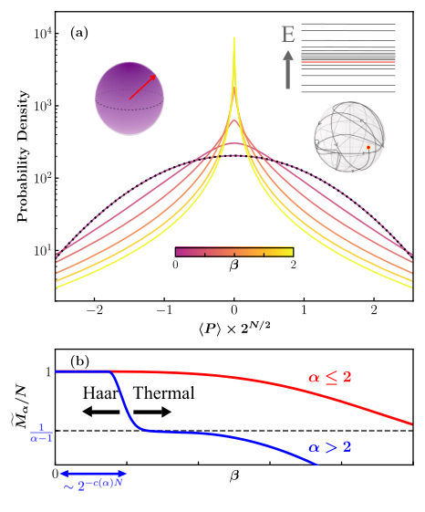
<figcaption class="paper-figure-caption"><b>Fig 1.</b> FIG. 1. Schematic of the main results. (a) Pauli spectrum dis- tribution for a typical state drawn from the thermal Scrooge ensemble of a chaotic local N-qubit Hamiltonian, shown for inverse temperatures β ∈[0, 2]. At β = 0, this reduces to Haar-random states whose Pauli spectrum is close to the Gaussian distribution N(0, 2−N) [19] (black dashed line). For β = O(1), the same Scrooge description captures the Pauli spectrum, and hence the magic, of equilibrium pure states such as energy eigenstates and late-time evolved states. (b) Magic density f Mα/N versus β. For α &gt; 2, we predict a sharp drop in the magic density, corresponding to a crossover from the “Haar” regime to the “thermal” regime...</figcaption>
</figure>
<figure class="paper-figure-card">
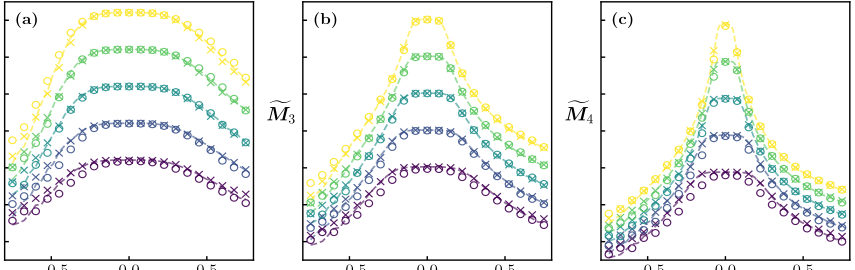
<figcaption class="paper-figure-caption"><b>Fig 2.</b> FIG. 2. Filtered stabilizer Rényi entropy (fSRE) f Mα versus effective inverse temperature β for (a) α = 2, (b) α = 3, and (c) α = 4. We compare three classes of equilibrium pure states generated from the MFIM (8) with 10 ≤N ≤18: energy eigenstates, late-time evolved states obtained by evolving random product states to Jt = 200, and states sampled from Scrooge(σβ). As N increases, the fSREs of the eigenstates and late-time evolved states agree closely with that of Scrooge(σβ).</figcaption>
</figure>
<figure class="paper-figure-card">
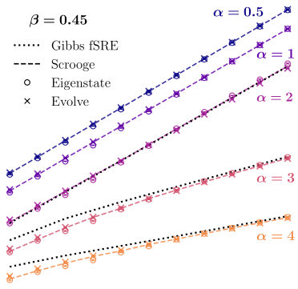
<figcaption class="paper-figure-caption"><b>Fig 3.</b> FIG. 3. Filtered stabilizer Rényi entropy (fSRE) f Mα versus number of qubits N at β = 0.45, for α ∈{0.5, 1, 2, 3, 4}. A vertical offset of α −1/2 is added for visualization purposes. We compare energy eigenstates of the MFIM (8), late-time evolved states obtained by evolving random product states to Jt = 200, and states sampled from Scrooge(σβ). The black dotted lines show f Mα(σβ) −log2(dα)/(α −1) for α ≥2 [Eq. (7)]. As N increases, the fSREs of the various states agree closely with f Mα(σβ).</figcaption>
</figure>
<figure class="paper-figure-card">

<figcaption class="paper-figure-caption"><b>Fig 4.</b> Figure 2 shows f Mα(ψ) for realistic examples of equilib- rium pure states, such as energy eigenstates (computed using POLFED [47]) and late-time evolved states ob- tained by time-evolution of random product states, com- pared against the average magic of Scrooge(σβ). Here, β is computed from Eq. (6). The eigenstate and late-time magic agree excellently with Scrooge(σβ), even at mod- est system sizes, and show a plateau near β = 0 where f Mα ≈N [19]; for α &gt; 2, its width shrinks with N [48]. In the SM, we show further numerical evidence of agree- ment with Scrooge(σβ) for other local Hamiltonians, sup- porting the universality of our theory. Interestingly, our preliminary results suggest...</figcaption>
</figure>
<figure class="paper-figure-card">
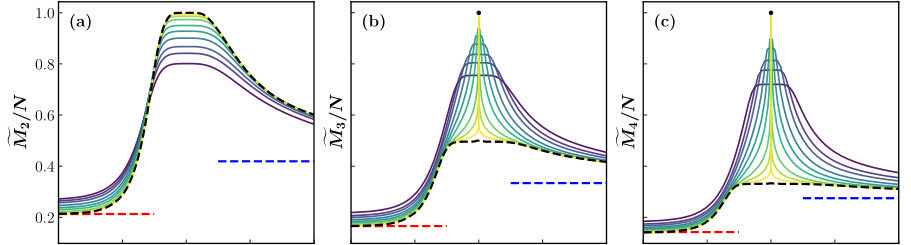
<figcaption class="paper-figure-caption"><b>Fig 5.</b> FIG. 4. Filtered stabilizer Rényi entropy (fSRE) density f Mα/N versus effective inverse temperature β for (a) α = 2, (b) α = 3, and (c) α = 4. The fSRE is calculated using the approximation ζα(ψ) ≈2N(2−α)(2α −1)!! + dαζα(σβ) inspired by Eq. (13), capturing both “Haar” and “thermal” regimes. The black dashed line shows the N →∞limit of the fSRE (and also the SRE) density, estimated by extrapolating numerical results for 8 ≤N ≤320; blue and red lines mark the limiting fSRE densities of the ground state and maximally excited state, respectively. For α &gt; 2, the black circle marks the infinite-temperature value f Mα/N = 1.</figcaption>
</figure>
</div>

<p><strong>Summary.</strong> This work establishes that the quantum resource known as 'magic' in chaotic many-body systems is a thermodynamic property, depending only on temperature at equilibrium. The authors show this universal behavior is captured by the thermal Scrooge ensemble, providing concrete, temperature-dependent predictions for entanglement measures like the fSRE. This unifies quantum resource theory with statistical mechanics.</p>
<p><strong>Why it may be interesting.</strong> It provides a thermodynamic characterization of a quantum information resource (magic), linking global quantum structure to simple thermodynamic parameters like temperature, which is highly relevant for understanding thermalization and resource quantification in AMO systems.</p>
<details>
<summary>Detailed structure</summary>
<p><strong>Main problem.</strong> The paper aims to establish a universal principle governing 'magic' (nonstabilizerness), a global quantum resource, in many-body systems at thermal equilibrium.</p>
<p><strong>Main result.</strong> Equilibrium magic is shown to be universal, depending only on temperature for systems conserving only energy, and is captured by the thermal Scrooge ensemble.</p>
<p><strong>Method.</strong> The analysis uses theoretical frameworks like the Eigenstate Thermalization Hypothesis (ETH) and employs the mathematically rigorous Scrooge ensemble to calculate the filtered stabilizer Rényi entropy (fSRE).</p>
<p><strong>Model / system.</strong> The study applies to generic chaotic quantum many-body systems, analyzed using Hamiltonians with local interactions, such as the mixed-field Ising model (MFIM).</p>
<p><strong>Key observables.</strong> Magic (nonstabilizerness), Filtered Stabilizer Rényi Entropy (fSRE), Pauli Spectrum $\Xi(
ho)$, and the thermal Scrooge ensemble.</p>
<p><strong>Important parameters / regimes.</strong> Temperature ($eta$), system size ($N$), and the Rényi order ($\alpha$).</p>
<p><strong>Assumptions / limitations.</strong> The analysis relies on the assumption that local observables approach the Gibbs state (ETH) and uses high-temperature expansions and approximations for the Scrooge measure.</p>
<p><strong>Figures summary.</strong> Figures illustrate the crossover of the fSRE from a 'Haar' regime at high temperatures to a 'thermal' regime governed by energy conservation, showing agreement between different state types (eigenstates vs. Scrooge).</p>
<p><strong>Paper structure.</strong> The paper develops the concept of magic in equilibrium, deriving universal predictions for the SRE based on temperature. It then compares these predictions using the Scrooge ensemble against numerical results for specific models like the MFIM, concluding with robustness checks against local perturbations.</p>
</details>
<details>
<summary>Abstract</summary>
<p>Thermalization conventionally describes local properties of isolated many-body systems at equilibrium. Magic, or nonstabilizerness $\unicode{x2013}$ the resource enabling universal quantum computation $\unicode{x2013}$ is by contrast encoded in the global structure of the many-body wavefunction. We show that, despite its global nature, the magic of equilibrium pure states of chaotic many-body systems, including late-time evolved states and energy eigenstates, is universal: it is captured by the thermal Scrooge ensemble, the minimally informative ensemble of pure states consistent with the Gibbs state at the same effective temperature. Therefore, for systems with no conserved quantities other than the total energy, equilibrium magic is a function of temperature alone, independent of the initial state and other microscopic features of the equilibrium state. This yields concrete universal predictions for the stabilizer Rényi entropies (SREs). At infinite temperature, the SRE is set by Haar-like fluctuations of the Pauli spectrum, while at finite temperature energy conservation induces a volume-law thermodynamic correction controlled by the thermal Pauli spectrum. We support these predictions with analytical arguments and extensive numerical simulations. We further show that chaotic many-body systems at high temperatures possess long-range magic and entanglement that cannot be removed by finite-depth local quantum circuits. Our results establish magic as a thermodynamic property of chaotic many-body systems and suggest that Scrooge ensembles may provide a unified framework for quantum many-body resources.</p>
</details>
<p><sub><a href="#top">↑ back to top</a></sub></p>

<p><a id="paper-2608.23207"></a></p>
<h3 id="universality-of-superdiffusion-in-simple-random-graphs">⭐ <a href="http://arxiv.org/abs/2608.23207v1">Universality of superdiffusion in simple random graphs</a></h3>
<p><strong>Highlighted author(s):</strong> Nicolò Defenu<br>
<strong>Authors:</strong> Mrinal Sarkar, Nicolò Defenu, Tilman Enss<br>
<strong>Type:</strong> theory · <strong>Category:</strong> disordered systems and neural networks · <strong>PDF:</strong> <a href="https://arxiv.org/pdf/2608.23207v1">https://arxiv.org/pdf/2608.23207v1</a><br>
<strong>Analysis basis:</strong> full PDF text, analyzed in chunks
<strong>Topic relevance:</strong> <code>non-equilibrium universality</code> <strong>1/5</strong></p>
<div class="figure-strip-hint">↔ Scroll figures horizontally</div>
<div class="paper-figures-scroll">
<figure class="paper-figure-card">
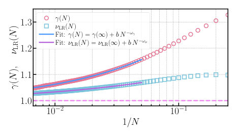
<figcaption class="paper-figure-caption"><b>Fig 1.</b> FIG. 2. Scaling of finite-N exponents νLR(N) and γ(N) in the SR regime of the clean kinetic sector at σ = 1.5. They reach asymptoti- cally to clean SR fixed point νLR(∞) = γ(∞) = 1 with correction- to-scaling exponents ων = ωγ ≈σ −σ∗, consistent with the field- theoretic predictions.</figcaption>
</figure>
<figure class="paper-figure-card">
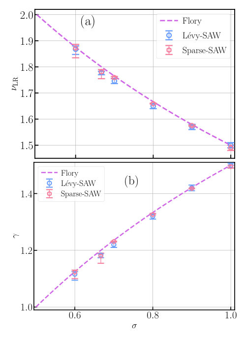
<figcaption class="paper-figure-caption"><b>Fig 2.</b> FIG. 1. Critical exponents νLR and γ at various σ in the LR regime of clean theory (0.5 &lt; σ &lt; 1). Sparse-SAW estimates (red hexagons) agree with the clean Lévy-SAW results (blue circles, Ref. [29]), within statistical uncertainties. The dashed violet line corresponds to Flory prediction, and empty square represents the mean-field value.</figcaption>
</figure>
</div>

<p><strong>Summary.</strong> This work analyzes self-avoiding walks on random graphs whose connectivity induces superdiffusive transport. By using field theory and Monte Carlo simulations, the authors demonstrate that the random graph disorder is irrelevant at criticality. This establishes random graphs as a useful platform for confirming the critical exponents of the clean superdiffusive Lévy-SAW universality class.</p>
<p><strong>Why it may be interesting.</strong> The finding that correlated graph disorder is irrelevant at criticality, leaving the clean critical behavior intact, provides a powerful theoretical tool for understanding how disorder affects critical phenomena in systems with long-range interactions.</p>
<details>
<summary>Detailed structure</summary>
<p><strong>Main problem.</strong> The paper investigates how the critical behavior of self-avoiding walks (SAWs) is affected when the underlying connectivity of the graph itself is random, particularly when this randomness controls both superdiffusive transport and quenched disorder.</p>
<p><strong>Main result.</strong> The critical exponents of the Sparse-SAW on a random graph agree with those of the clean superdiffusive Lévy-SAW, suggesting that the random graph belongs to the same universality class.</p>
<p><strong>Method.</strong> The study employs large-scale Monte Carlo simulations and develops a Gaussian-truncated field theory approach, utilizing the replica trick to average over the random graph disorder.</p>
<p><strong>Model / system.</strong> The system models SAWs on a one-dimensional long-range random ring graph, where bonds are generated with a probability decaying as $|i-j|^{-(1+\sigma)}$. This setup allows the single parameter $\sigma$ to control both the long-range superdiffusive kinetic operator and the quenched disorder.</p>
<p><strong>Key observables.</strong> Critical exponents ($
u_{LR}$ and $\gamma$) characterizing the SAW behavior, and the asymptotic decay of the propagator $G(x) \sim |x|^{-1-\sigma}$.</p>
<p><strong>Important parameters / regimes.</strong> The decay exponent $\sigma$ of the random bond probability, which controls the crossover between short-range and long-range physics.</p>
<p><strong>Assumptions / limitations.</strong> The analysis relies on the replica trick for disorder averaging and assumes that under coarse-graining, the long-range kinetic operator dominates the disorder effects.</p>
<p><strong>Figures summary.</strong> Figure 1 compares the calculated critical exponents for Lévy-SAW and Sparse-SAW as a function of $\sigma$, showing agreement with the clean Flory prediction in the long-range regime.</p>
<p><strong>Paper structure.</strong> The paper progresses by first defining the physical system (SAWs on random graphs) and the associated disorder/transport mechanism. It then applies field theory and replica methods to calculate the disorder-averaged action and propagator, ultimately comparing the resulting critical exponents to the clean system predictions.</p>
</details>
<details>
<summary>Abstract</summary>
<p>Random walks with long-range jumps can drive superdiffusive transport, replacing ordinary diffusion with an effective long-range kinetic operator. Such superdiffusive kinetics is also central to critical phenomena, notably the self-avoiding walk with long-range jump statistics, or Lévy-SAW. This work investigates how the critical behavior is affected when the long-range connectivity itself becomes random. We study self-avoiding walks (SAWs) on a one-dimensional long-range random ring graph, where bonds are independently generated with Bernoulli probability $\sim|i-j|^{-(1+σ)}$. We term this walk Sparse-SAW. The same random bonds are responsible for both long-range superdiffusive transport and quenched disorder, with both simultaneously controlled by the single parameter $σ$, placing the problem beyond the conventional Harris and Weinrib-Halperin frameworks. Through large-scale Monte Carlo simulations and a Gaussian-truncated field theory, we show that Sparse-SAW belongs to the same universality class as the clean superdiffusive Lévy-SAW. The random bonds generate short-range uncorrelated and long-range correlated mass disorder while simultaneously producing the long-range kinetic operator. Under coarse-graining, the latter dominates, restoring the clean critical behavior. Our study suggests that the full non-Gaussian Bernoulli statistics may lead to disorder physics beyond the conventional theory of quenched disorder, while establishing random graphs as an efficient platform for extracting the critical exponents of the clean superdiffusive Lévy-SAW universality class.</p>
</details>
<p><sub><a href="#top">↑ back to top</a></sub></p>

<p><a id="paper-2608.23025"></a></p>
<h3 id="a-unified-quantum-neural-network-framework-for-hamiltonian-learning-and-emulation-of-unknown-quantum-systems"><a href="http://arxiv.org/abs/2608.23025v1">A Unified Quantum Neural Network Framework for Hamiltonian Learning and Emulation of Unknown Quantum Systems</a></h3>
<p><strong>Authors:</strong> Ahmad Salmanogli<br>
<strong>Type:</strong> theory · <strong>Category:</strong> other · <strong>PDF:</strong> <a href="https://arxiv.org/pdf/2608.23025v1">https://arxiv.org/pdf/2608.23025v1</a><br>
<strong>Analysis basis:</strong> full PDF text, analyzed in chunks
<strong>Topic relevance:</strong> 🔥 <code>methods for driven-dissipative</code> <strong>4/5</strong> · <code>Tavis-Cummings &amp; cavity-many-emitter</code> <strong>3/5</strong> · <code>analog quantum simulation</code> <strong>3/5</strong> · <code>correlated / nonlocal dissipation</code> <strong>3/5</strong> · <code>driven-dissipative phase transition</code> <strong>3/5</strong> · <code>Keldysh / 2PI / non-Gaussian methods</code> <strong>2/5</strong> · <code>quantum measurements</code> <strong>2/5</strong> · <code>non-equilibrium universality</code> <strong>1/5</strong></p>
<div class="figure-strip-hint">↔ Scroll figures horizontally</div>
<div class="paper-figures-scroll">
<figure class="paper-figure-card">
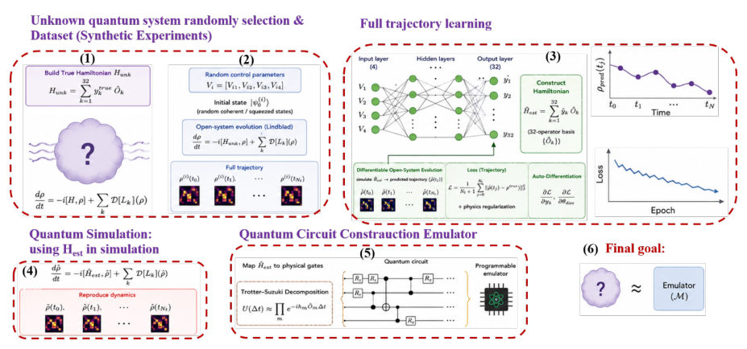
<figcaption class="paper-figure-caption"><b>Fig 1.</b> Figure 1: Overall workflow of the proposed full-trajectory QNN framework for the identification of an unknown quantum system and the construction of a quantum emulator. (1) An unknown open quantum system is generated by physics-informed random sampling of thirty-two Hamiltonian coefficients together with the dissipation rates κ, γ1 and γ2. (2) The corresponding Lindblad dynamics are propagated with QuTiP, and the complete noisy density-matrix trajectory is stored together with the control vector, the randomized initial state and the chirped excitation. (3) A five-layer QNN maps the four-dimensional control vector onto the thirty-two Hamiltonian coefficients, from which a Hermitian...</figcaption>
</figure>
<figure class="paper-figure-card">
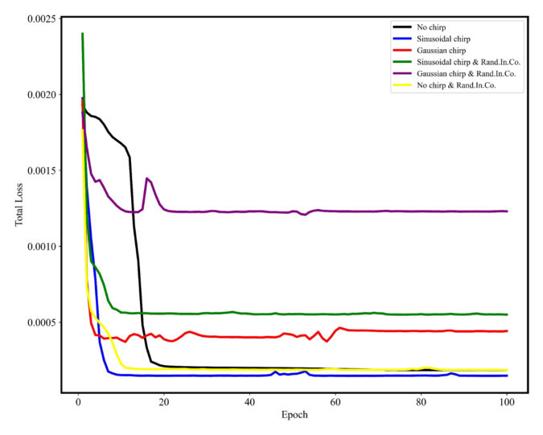
<figcaption class="paper-figure-caption"><b>Fig 2.</b> Figure 2: Trajectory-density loss achieved for different approaches for the case of single qubit Hamil- tonian H1 = 0.5 × ω1σz1; “Rand.In.Co.” is acronym for randomized initial conditions.</figcaption>
</figure>
<figure class="paper-figure-card">

<figcaption class="paper-figure-caption"><b>Fig 3.</b> Figure 2 compares the influence of several learning strategies on the convergence behavior of the proposed QNN framework, including sinusoidal chirp excitation, Gaussian chirp excitation, randomization of the initial conditions, and combinations of these techniques. The results are compared with the baseline approach without additional excitation or initialization strategies. Although the combined approaches exhibit a relatively rapid initial reduction in the trajectory- density loss, their final steady-state loss remains comparatively high, indicating that fast con- vergence does not necessarily guarantee accurate reconstruction. It should be noted that we applied the combination of...</figcaption>
</figure>
<figure class="paper-figure-card">
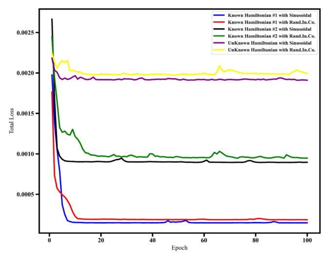
<figcaption class="paper-figure-caption"><b>Fig 4.</b> Figure 3: Trajectory-density loss achieved for different approaches applied on different Hamiltonians.</figcaption>
</figure>
<figure class="paper-figure-card">

<figcaption class="paper-figure-caption"><b>Fig 5.</b> Figure 3 further demonstrates the influence of Hamiltonian complexity on the reconstruction performance. As the number of effective degrees of freedom increases, the trajectory-density loss generally becomes larger, indicating that the learning problem becomes progressively more difficult. This behavior is particularly evident for the unknown Hamiltonian, which is rep- resented using 32 independent coefficients in the general Hamiltonian parameterization. In contrast, the simpler benchmark Hamiltonians, H1 and H2, contain substantially fewer effective degrees of freedom and can therefore be learned more accurately from the available train- ing data. The degradation observed for the unknown...</figcaption>
</figure>
</div>

<p><strong>Summary.</strong> This paper introduces a QNN framework to identify unknown Hamiltonians governing open quantum systems by analyzing the full time evolution of the density matrix. By training on synthetic data derived from Lindblad dynamics, the QNN reconstructs the system's Hamiltonian and maps it onto physical circuit parameters. This establishes a powerful, data-driven methodology for quantum system characterization and emulation.</p>
<p><strong>Why it may be interesting.</strong> This work directly addresses the challenge of characterizing complex, open quantum systems by providing a machine learning bridge from abstract dynamics to physical hardware parameters, which is highly relevant for quantum optics and circuit QED.</p>
<details>
<summary>Detailed structure</summary>
<p><strong>Main problem.</strong> The core problem is accurately identifying the unknown Hamiltonian governing an open quantum system, which is crucial for quantum computing and control.</p>
<p><strong>Main result.</strong> The framework successfully establishes a data-driven pathway to reconstruct the unknown Hamiltonian and map it onto physical circuit parameters, demonstrating high state-level reconstruction fidelity.</p>
<p><strong>Method.</strong> It uses a Quantum Neural Network (QNN) trained on synthetic data generated from the full density matrix trajectory evolution under Lindblad dynamics.</p>
<p><strong>Model / system.</strong> The system is an open quantum system modeled by the Lindblad master equation, involving a Hamiltonian parameterized by 32 coefficients and dissipation parameters. The final emulation targets a physical two-qubit bus resonator architecture.</p>
<p><strong>Key observables.</strong> Quantum-state fidelity, trace distance, and trajectory density loss are used to evaluate reconstruction accuracy.</p>
<p><strong>Important parameters / regimes.</strong> The system is characterized by 32 Hamiltonian coefficients, and the emulation is performed in the dispersive regime of a cQED architecture.</p>
<p><strong>Assumptions / limitations.</strong> The method assumes the unknown system dynamics can be accurately modeled by the Lindblad master equation and that the Hamiltonian can be represented by a predefined 32-operator basis set.</p>
<p><strong>Figures summary.</strong> Figure 1 illustrates a five-stage workflow: generating the unknown system, creating the full density matrix trajectory dataset, training the QNN to predict coefficients, optimizing via trajectory loss, and finally mapping the result to a physical emulator.</p>
<p><strong>Paper structure.</strong> The paper follows a clear workflow: defining the problem (Hamiltonian identification) -&gt; generating physics-informed synthetic data (Lindblad dynamics) -&gt; training the QNN to map inputs to Hamiltonian coefficients -&gt; optimizing the reconstruction using trajectory loss -&gt; validating the result by mapping to a physical circuit.</p>
</details>
<details>
<summary>Abstract</summary>
<p>Accurate identification of unknown quantum systems is essential for quantum computing, sensing, and control because the Hamiltonian governs quantum state evolution. This work proposes a QNN based framework for black box Hamiltonian learning and quantum system emulation using full density matrix trajectory learning. Unlike approaches based only on final states or selected observables, the method exploits the complete temporal evolution of the density matrix under Lindblad dynamics. A synthetic dataset of physically admissible Hamiltonians and dissipation parameters is generated to emulate experimental measurements. The QNN learns a nonlinear mapping from control inputs to a 32-dimensional Hamiltonian coefficient vector, enabling reconstruction and differentiable emulation of the unknown system. Chirped excitation and randomized initial quantum states are incorporated to improve robustness and provide richer dynamical information. Performance is evaluated using trajectory density loss, quantum-state fidelity, and trace distance. Randomized initialization improves state-level reconstruction, increasing fidelity to 0.929 for the single qubit benchmark and 0.787 for the unknown system, while reducing trace distance to 0.124 and 0.316, respectively. In contrast, chirped excitation primarily improves optimization by accelerating convergence and reducing trajectory density loss. Finally, the learned Hamiltonian is mapped onto a physical two qubit bus resonator architecture in the dispersive regime, yielding key circuit parameters including transmon capacitances, Josephson inductances, qubit separation, and bus-resonator length. The framework therefore establishes a data-driven pathway from black box quantum system identification to physical quantum emulation, with potential applications in quantum digital twin modeling.</p>
</details>
<p><sub><a href="#top">↑ back to top</a></sub></p>

<p><a id="paper-2608.21635"></a></p>
<h3 id="increased-cyclicity-of-atomic-transitions-via-coherent-interference-of-decay-paths"><a href="http://arxiv.org/abs/2608.21635v1">Increased cyclicity of atomic transitions via coherent interference of decay paths</a></h3>
<p><strong>Authors:</strong> Eliza Cornell, Benjamin Pingault, Gergő Thiering, Neil Sinclair, Ádám Gali, Marko Lončar<br>
<strong>Type:</strong> theory · <strong>Category:</strong> other · <strong>PDF:</strong> <a href="https://arxiv.org/pdf/2608.21635v1">https://arxiv.org/pdf/2608.21635v1</a><br>
<strong>Analysis basis:</strong> full PDF text, analyzed in chunks
<strong>Topic relevance:</strong> 🔥 <code>interference shaping light</code> <strong>4/5</strong> · <code>correlated / nonlocal dissipation</code> <strong>3/5</strong> · <code>quantum measurements</code> <strong>3/5</strong> · <code>Dicke superradiance</code> <strong>2/5</strong> · <code>driven-dissipative phase transition</code> <strong>2/5</strong> · <code>methods for driven-dissipative</code> <strong>2/5</strong> · <code>Full counting statistics</code> <strong>1/5</strong> · <code>Keldysh / 2PI / non-Gaussian methods</code> <strong>1/5</strong> · <code>Tavis-Cummings &amp; cavity-many-emitter</code> <strong>1/5</strong> · <code>non-equilibrium universality</code> <strong>1/5</strong> · <code>superradiant laser</code> <strong>1/5</strong></p>
<div class="figure-strip-hint">↔ Scroll figures horizontally</div>
<div class="paper-figures-scroll">
<figure class="paper-figure-card">
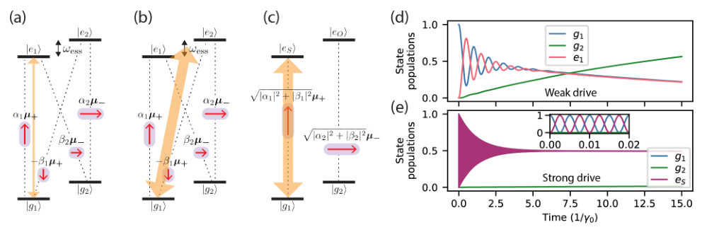
<figcaption class="paper-figure-caption"><b>Fig 1.</b> FIG. 1. Cycling transitions via strong drive. (a) An atomic system without native cycling transitions. In a traditional readout scheme that solely couples |g1⟩to |e1⟩, the number of photons emitted will be limited because the system will be optically pumped to |g2⟩. (b) The same atomic system with a strong drive polarized along µ+ which simultaneously couples |g1⟩to both |e1⟩and |e2⟩. When the Rabi rate is much greater than the frequency splitting of the excited states ωess, the system is directly driven between |g1⟩and |eS⟩∼α1|e1⟩−β1|e2⟩. (c) The system with the excited states basis rewritten, indicated the allowed transitions. In (a-c), the amplitude and polarization of the TDMs are...</figcaption>
</figure>
<figure class="paper-figure-card">
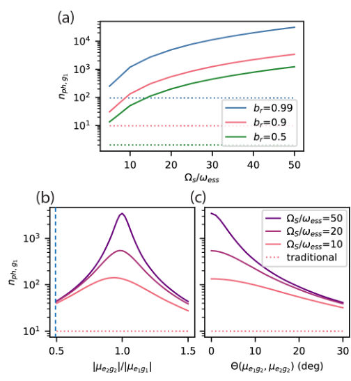
<figcaption class="paper-figure-caption"><b>Fig 2.</b> FIG. 2. Comparison of strong driving photon emission out- comes for atomic systems with different TDMs. (a) Num- ber of total average emitted photons nph,g1 from an atomic system whose TDMs have the form in Eq. 2. The dotted lines indicate nph,g1 for a traditional excitation scheme which applies a weak coherent drive resonant with the |g1⟩−|e1⟩ optical transition. The solid lines indicate nph,g1 for a system driven by a strong field which is tuned halfway in between the |g1⟩−|e1⟩and |g1⟩−|e2⟩transitions. (b) Number of to- tal average emitted photons nph,g1 for a system in which the TDM amplitudes vary from the form in Eq. 2, parameter- ized in terms of the ratio between |µe2g2| and |µe1g1|....</figcaption>
</figure>
<figure class="paper-figure-card">
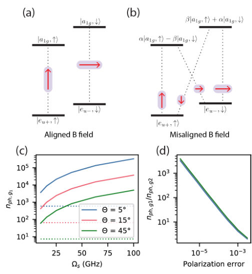
<figcaption class="paper-figure-caption"><b>Fig 3.</b> FIG. 3. Strong drive-induced cycling transitions in an NiV– center. (a) The NiV–’s two excited states and two lowest- energy ground states under an externally applied magnetic field that is aligned to the symmetry axis of the NiV–. The excited state manifold contains only one orbital, while the two lowest ground states have different orbital characteristics, due to spin-orbit coupling. (b) The NiV– under an externally applied and slightly misaligned magnetic field. The ground states retain the same orbital and spin character, while the excited state magnetic quantization axis rotates freely. All optical transitions are allowed. (c) Number of photons nph,g1 emitted by the NiV– with a strong...</figcaption>
</figure>
<figure class="paper-figure-card">
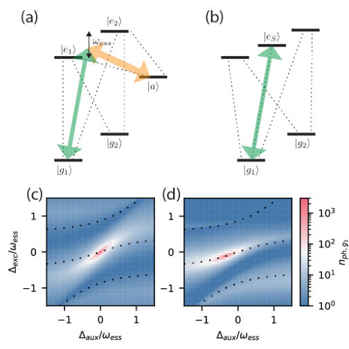
<figcaption class="paper-figure-caption"><b>Fig 4.</b> FIG. 4. Auxiliary drive method for inducing cycling transi- tions. (a) An atomic system with no inherent cycling transi- tions between bare excited states |e1⟩, |e2⟩and ground states |g1⟩, |g2⟩. Allowed transitions are shown with dotted lines. An applied auxiliary field (shown in orange) dresses the excited states by coupling them to an auxiliary state |a⟩. (b) The same atomic system, with the excited state manifold written in the dressed basis that includes the auxiliary field. For cer- tain power and detuning parameters of the auxiliary field, one of the dressed states (|eS⟩) does not decay to |g2⟩, yielding a cycling transition, addressed by the excitation field (shown in green). (c,d)...</figcaption>
</figure>
<figure class="paper-figure-card">
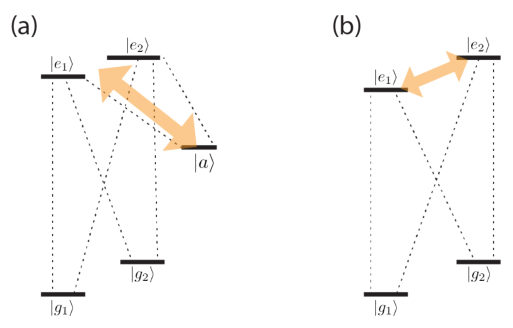
<figcaption class="paper-figure-caption"><b>Fig 5.</b> FIG. 5. (a) A system in which coherent interference of decay could be observed. (b) A system in which coherent interfer- ence of decay could not be observed due to time-dependence in the collapse operator terms.</figcaption>
</figure>
</div>

<p><strong>Summary.</strong> This paper presents a method to dramatically improve the efficiency of optical state readout in quantum emitters by manipulating the decay pathways through coherent interference. By applying tailored external driving fields, the authors engineer artificial cycling transitions, enabling the emission of many more photons than previously possible. This technique offers a pathway to high-fidelity quantum measurements in solid-state systems like the NiV- center.</p>
<p><strong>Why it may be interesting.</strong> This work is highly relevant to AMO physics and quantum optics as it provides a powerful, controllable mechanism (coherent interference) to engineer fundamental quantum processes like spontaneous emission, which is crucial for quantum memory and readout.</p>
<details>
<summary>Detailed structure</summary>
<p><strong>Main problem.</strong> The primary goal is to enhance the fidelity of optical readout in atomic state measurement, which is typically limited by imperfect photon collection efficiency.</p>
<p><strong>Main result.</strong> The authors demonstrate that cyclicity can be significantly extended by engineering coherent destructive interference between spurious decay paths, leading to a massive increase in emitted photons.</p>
<p><strong>Method.</strong> The method involves applying strong coherent driving fields or auxiliary fields to induce artificial cycling transitions, circumventing limitations inherent in the native atomic decay pathways.</p>
<p><strong>Model / system.</strong> The study models atomic systems, using the negatively-charged nickel vacancy center (NiV-) in diamond as a prime example. The physics is described using a full master equation formalism involving ground and excited states.</p>
<p><strong>Key observables.</strong> The number of emitted photons ($n_{	ext{ph},g_1}$) is the key diagnostic, alongside the branching ratio ($b$) which measures readout efficiency.</p>
<p><strong>Important parameters / regimes.</strong> Key parameters include the strength of the driving fields ($\Omega_S$), detuning parameters ($\Delta_{aux}$), and the polarization dependence of the transition dipole moments (TDMs).</p>
<p><strong>Assumptions / limitations.</strong> The analysis often simplifies the system to two decaying excited states, and the strong drive approach requires careful polarization control and high optical powers.</p>
<p><strong>Figures summary.</strong> Figures illustrate the comparison between traditional readout (limited by pumping) and the enhanced readout using strong driving or auxiliary fields, showing orders of magnitude increases in photon counts.</p>
<p><strong>Paper structure.</strong> The paper progresses by first establishing the limitation of traditional readout, then introducing the strong drive approach to suppress unwanted decay paths, and finally detailing an auxiliary drive scheme to achieve even higher cyclicity with lower power.</p>
</details>
<details>
<summary>Abstract</summary>
<p>Optical readout is a fundamental tool in atomic state measurement, yet the fidelity of optical readout is frequently limited by imperfect photon collection. This can be mitigated when readout occurs on a cycling transition which continuously fluoresces under resonant excitation, thus increasing signal and enabling single-shot readout. We present a method to extend the cyclicity of atomic transitions via coherent destructive interference between spurious decay paths. We describe the characteristics of atomic systems in which this method can be implemented and model several examples in which the number of emitted photons is increased by multiple orders of magnitude.</p>
</details>
<p><sub><a href="#top">↑ back to top</a></sub></p>

<p><a id="paper-2608.21835"></a></p>
<h3 id="monitored-free-fermions-under-periodic-driving"><a href="http://arxiv.org/abs/2608.21835v1">Monitored free fermions under periodic driving</a></h3>
<p><strong>Authors:</strong> Aditi Chakrabarty, Alexander D. Mirlin, Igor Poboiko<br>
<strong>Type:</strong> theory · <strong>Category:</strong> disordered systems and neural networks · <strong>PDF:</strong> <a href="https://arxiv.org/pdf/2608.21835v1">https://arxiv.org/pdf/2608.21835v1</a><br>
<strong>Analysis basis:</strong> full PDF text, analyzed in chunks
<strong>Topic relevance:</strong> 🔥 <code>quantum measurements</code> <strong>4/5</strong> · <code>Keldysh / 2PI / non-Gaussian methods</code> <strong>3/5</strong> · <code>driven-dissipative phase transition</code> <strong>3/5</strong> · <code>methods for driven-dissipative</code> <strong>3/5</strong> · <code>non-equilibrium universality</code> <strong>3/5</strong> · <code>analog quantum simulation</code> <strong>2/5</strong> · <code>Frenkel-Kontorova</code> <strong>1/5</strong> · <code>correlated / nonlocal dissipation</code> <strong>1/5</strong> · <code>scars &amp; prethermalization</code> <strong>1/5</strong></p>
<div class="figure-strip-hint">↔ Scroll figures horizontally</div>
<div class="paper-figures-scroll">
<figure class="paper-figure-card">
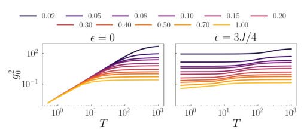
<figcaption class="paper-figure-caption"><b>Fig 1.</b> Figure 1. Analytical results for g2 0 as obtained in Eq. (6), for different measurement strengths γ/J at ϵ = 0 and ϵ = 3J/4.</figcaption>
</figure>
<figure class="paper-figure-card">
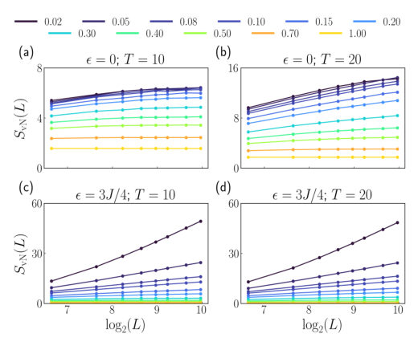
<figcaption class="paper-figure-caption"><b>Fig 2.</b> Figure 2. Average half-chain entanglement entropy SvN as a function of system size L. Panels (a,b) correspond to the maximally symmetric driving (ϵ = 0) with period T = 10 and T = 20, respectively, while panels (c,d) correspond to the case ϵ = 3J/4 with the same driving periods. The system sizes considered here are L = 100, 200, 300, 400, 500, 600, 800, and 1000. For L ≤600, all possible half-chain cuts for ev- ery state are included in the averaging, whereas for L = 800 and L = 1000, the averages are taken over 20 approximately equidistant cuts. In addition, the averaging over quantum trajectories and over the time in the steady-state regime is performed, see text in Sec. IV A and in...</figcaption>
</figure>
<figure class="paper-figure-card">
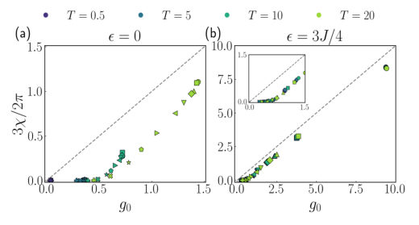
<figcaption class="paper-figure-caption"><b>Fig 3.</b> Figure 3. Numerically determined coefficient χ (multiplied by 3/2π) of the initial logarithmic growth of the entanglement entropy vs the analytical value of the bare diffusion constant g0, Eq. (6), for (a) ϵ = 0 and (b) ϵ = 3J/4. The data for different time periods (see legend) and for different values of the measurement rate γ/J (identical to those in Fig. 2) are included. The inset of panel (b) provides a zoom on the region of small g0.</figcaption>
</figure>
<figure class="paper-figure-card">
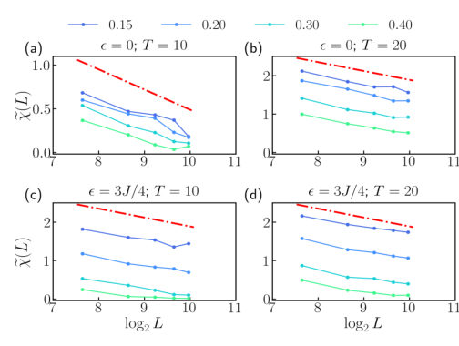
<figcaption class="paper-figure-caption"><b>Fig 4.</b> Figure 4. Discrete version of the entanglement entropy deriva- tive in Eq. (26), defined according to Eq. (29) by using the data presented in Fig. 2. Different colors correspond to differ- ent values of the measurement rate γ/J (see legend), which are chosen in the range from 0.15 to 0.4 providing access to the diffusive regime for the numerically studied system sizes L. The red dash-dotted straight lines have the slope −1/3 visualizing the analytically predicted WL renormalization as given in Eq. (28).</figcaption>
</figure>
<figure class="paper-figure-card">
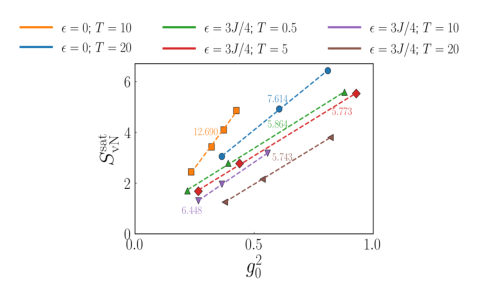
<figcaption class="paper-figure-caption"><b>Fig 5.</b> Figure 5. Numerical verification of the linear relation in Eq. (30) between the saturated value Ssat vN of the entanglement entropy at L ≫ξ and the square of the bare conductivity g0. The values of Ssat vN are obtained from those data of Fig. 2 that exhibit saturation at numerically studied system sizes. The values of g0 are given by Eq. (6). Different colors correspond to different parameters (ϵ, T) of the time-periodic Hamilto- nian H(t), Eq. (1). Different points for each color correspond to different values of the measurement rate γ/J. The slopes corresponding to each data set with given H(t) and varying γ/J are indicated and visualized by dashed lines. The ana- lytically predicted...</figcaption>
</figure>
</div>

<p><strong>Summary.</strong> This work analytically and numerically studies free fermions subjected to both periodic driving and continuous local monitoring. Using the nonlinear sigma-model, the authors show that the system's fundamental universality class is preserved, while predicting characteristic crossovers between ballistic, diffusive, and localized regimes. This provides a comprehensive theoretical understanding of measurement effects in driven quantum matter.</p>
<p><strong>Why it may be interesting.</strong> It provides a unified framework for understanding how measurement back-action and time-periodic driving interact in fermionic systems, touching upon concepts relevant to open quantum systems and non-equilibrium dynamics.</p>
<details>
<summary>Detailed structure</summary>
<p><strong>Main problem.</strong> The paper investigates how continuous monitoring of local particle density affects the dynamics of a one-dimensional periodically driven free-fermionic system.</p>
<p><strong>Main result.</strong> The driving does not change the universality class, and the system exhibits successive crossovers from ballistic to diffusive behavior, with weak-localization corrections observed in the diffusive regime.</p>
<p><strong>Method.</strong> The analysis employs a combination of analytical field-theoretical techniques, specifically the nonlinear sigma-model (NLSM) for long-wavelength physics, and numerical simulations using the stochastic Schrödinger equation.</p>
<p><strong>Model / system.</strong> The system is a 1D chain of free spinless fermions governed by a time-periodic hopping Hamiltonian, whose evolution is non-unitary due to continuous quantum measurements of local particle densities.</p>
<p><strong>Key observables.</strong> Von-Neumann entanglement entropy, density correlation function, and the renormalization of the NLSM coupling constant.</p>
<p><strong>Important parameters / regimes.</strong> Monitoring rate ($\gamma$), system size ($\ell$), and the bare coupling constant ($g_0$).</p>
<p><strong>Assumptions / limitations.</strong> The analysis relies on the long-wavelength approximation using the NLSM and models the measurement process via the quantum state diffusion protocol.</p>
<p><strong>Figures summary.</strong> The notes indicate numerical simulations demonstrate successive crossovers from ballistic to diffusive behavior, and ultimately to localization as system size increases.</p>
<p><strong>Paper structure.</strong> The paper develops the theory by first establishing the non-unitary evolution, then applying the NLSM to describe long-wavelength physics, deriving renormalization group flow equations, and finally corroborating these analytical predictions with numerical simulations of entanglement entropy and correlation functions.</p>
</details>
<details>
<summary>Abstract</summary>
<p>We investigate analytically and numerically a one-dimensional periodically driven free-fermionic system subjected to monitoring of the local particle density. Based on the analytical approach that describes the long-wavelength physics of the time-dependent Hamiltonian in the field-theoretical language using the nonlinear sigma-model (NLSM), we reveal that driving does not alter the universality class of the problem. As a consequence, the system retains the area-law behavior in the thermodynamic limit, with an intermediate diffusive regime giving rise to logarithmic growth of entanglement entropy for a small monitoring rate. At the same time, driving leads to a renormalization of the bare coupling constant of the NLSM, which controls the space-time <code>conductivity'' in the diffusive regime. We derive the analytic form of this renormalization, which becomes particularly strong in the case of a</code>maximally symmetric'' drive and sufficiently short driving period. In addition, we employ the Wiener-Hopf method to investigate the ballistic-diffusive crossover. These analytical predictions are corroborated by numerical simulations of the von-Neumann entanglement entropy and the density correlation function. Our numerical results clearly demonstrate that, with an increase in the system size, there are successive crossovers from ballistic to diffusive behavior and ultimately to localization. Furthermore, in the diffusive regime, we observe weak-localization corrections that are in agreement with the analytical predictions of the NLSM. Overall, our results provide a unified analytical and numerical framework for understanding the effects of monitoring in time-modulated fermionic systems, paving a way for broader investigations of driven quantum matter.</p>
</details>
<p><sub><a href="#top">↑ back to top</a></sub></p>

<p><a id="paper-2608.22357"></a></p>
<h3 id="spinning-giant-optomechanical-cavity-with-nonreciprocal-self-interference"><a href="http://arxiv.org/abs/2608.22357v1">Spinning giant optomechanical cavity with nonreciprocal self-interference</a></h3>
<p><strong>Authors:</strong> Yao-Tong Chen<br>
<strong>Type:</strong> theory · <strong>Category:</strong> other · <strong>PDF:</strong> <a href="https://arxiv.org/pdf/2608.22357v1">https://arxiv.org/pdf/2608.22357v1</a><br>
<strong>Analysis basis:</strong> full PDF text, analyzed in chunks
<strong>Topic relevance:</strong> 🔥 <code>interference shaping light</code> <strong>4/5</strong> · <code>correlated / nonlocal dissipation</code> <strong>3/5</strong> · <code>driven-dissipative phase transition</code> <strong>3/5</strong> · <code>methods for driven-dissipative</code> <strong>3/5</strong> · <code>Keldysh / 2PI / non-Gaussian methods</code> <strong>2/5</strong> · <code>non-equilibrium universality</code> <strong>2/5</strong> · <code>analog quantum simulation</code> <strong>1/5</strong> · <code>quantum measurements</code> <strong>1/5</strong></p>
<div class="figure-strip-hint">↔ Scroll figures horizontally</div>
<div class="paper-figures-scroll">
<figure class="paper-figure-card">
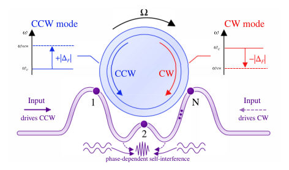
<figcaption class="paper-figure-caption"><b>Fig 1.</b> FIG. 1. Schematic of a giant spinning optomechanical cavity. A spinning ring cavity is evanescently coupled to a meander- ing waveguide at multiple spatially separated points, forming a giant-cavity configuration. The cavity supports two coun- terpropagating optical modes, denoted by CW and CCW, whose resonance frequencies are shifted in opposite directions by the rotation at angular velocity Ω. The multi-point waveg- uide coupling leads to self-interference, which makes the effec- tive detuning, dissipation, and driving phase dependent and direction dependent.</figcaption>
</figure>
<figure class="paper-figure-card">
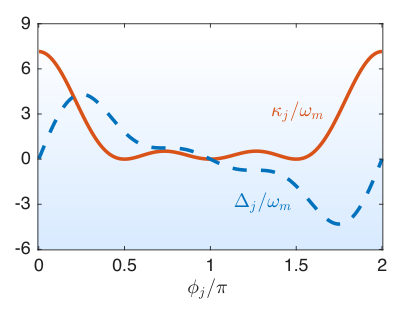
<figcaption class="paper-figure-caption"><b>Fig 2.</b> FIG. 2. Phase dependence of the effective optical linewidth κj/ωm (solid) and detuning ∆j/ωm (dashed) for N = 4 in the overcoupled limit κ0 ≃0. Multi-point self-interference strongly modulates the linewidth, allowing the system to be tuned between the resolved- and unresolved-sideband regimes. The parameters are κex,j ≃38 MHz and ωm ≃85 MHz.</figcaption>
</figure>
<figure class="paper-figure-card">
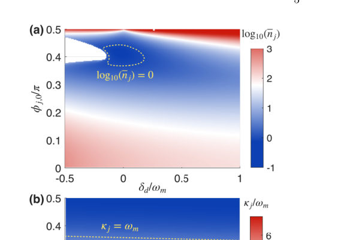
<figcaption class="paper-figure-caption"><b>Fig 3.</b> FIG. 3. Phase-dependent cooling for a static cavity. (a) Logarithm of the steady-state phonon number, log10(¯nj), and (b) effective linewidth, κj/ωm, as functions of the driving de- tuning δd and the reference phase ϕj,0. The yellow dashed contour in (a) and dashed line in (b) mark the ¯nj = 1 thresh- old and the boundary κj = ωm between the resolved- and unresolved-sideband regimes, respectively. The parameters are κex,j ≃38 MHz, ωm ≃85 MHz, γm ≃3 kHz, T ≃3 K, g ≃67 Hz, P ≃5.4 W, L ≃4×10−3 m, and vg ≃1.1×107 m/s.</figcaption>
</figure>
<figure class="paper-figure-card">
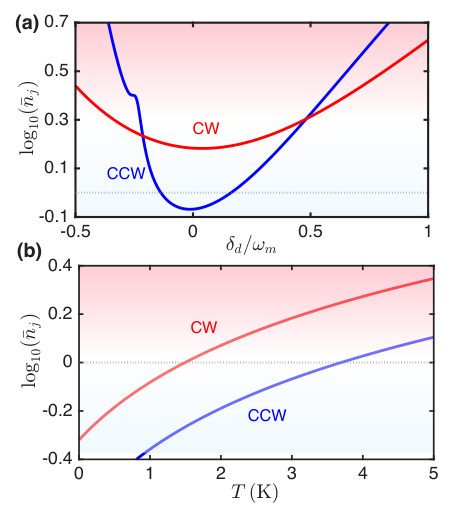
<figcaption class="paper-figure-caption"><b>Fig 4.</b> FIG. 4. Nonreciprocal phonon cooling for the two opposite driving directions. (a) Logarithm of the steady-state phonon number, log10(¯nj), as a function of the driving detuning δd at T ≃3 K. (b) log10(¯nj) as a function of the temperature T at the reference red-sideband point δd ≃0. The reference phases are chosen as ϕcw,0 ≃0.34π and ϕccw,0 ≃0.38π, correspond- ing to a phase difference δϕ0 ≃0.04π between the two coun- terpropagating modes. For the spinning cavity considered here, we take |∆F | = 2.08ωm, corresponding to Ω≈30 kHz. The other parameters are the same as those in Fig. 3.</figcaption>
</figure>
<figure class="paper-figure-card">
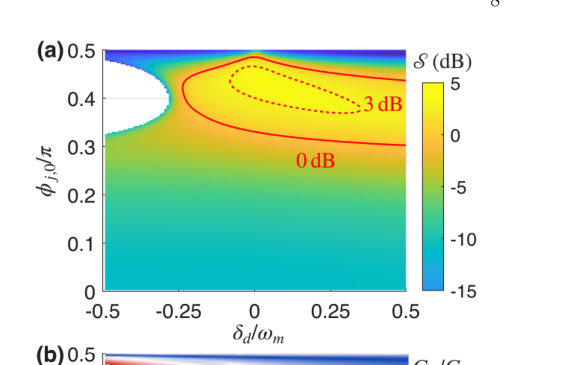
<figcaption class="paper-figure-caption"><b>Fig 5.</b> FIG. 5. Phase-dependent mechanical squeezing for a static cavity. (a) Optimized mechanical squeezing Sj and (b) the corresponding optimal two-tone coupling ratio Gj,+/Gj,−as functions of the driving detuning δd and the reference phase ϕj,0. The red solid and dashed contours in (a) indicate Sj = 0 dB and Sj = 3 dB, respectively. Only stable parameter points satisfying Eq. (48) and Gj,+ &lt; Gj,−are retained. The red-tone input power is P−≃3.4 W, the mechanical damping rate is γm ≃2 kHz, and the temperature is T ≃0.1 K. The other parameters are the same as those in Fig. 3.</figcaption>
</figure>
</div>

<p><strong>Summary.</strong> This paper investigates how multi-point self-interference in a spinning optomechanical cavity allows for precise, phase-controlled engineering of the mechanical quantum reservoir. By combining this interference effect with cavity rotation, the authors demonstrate a novel route to achieving nonreciprocal quantum phenomena, such as directional phonon cooling and squeezing.</p>
<p><strong>Why it may be interesting.</strong> This work provides a sophisticated theoretical blueprint for controlling quantum dissipation and generating nonreciprocal quantum effects in solid-state optomechanical systems, which is highly relevant to quantum sensing and quantum transduction.</p>
<details>
<summary>Detailed structure</summary>
<p><strong>Main problem.</strong> The study aims to engineer quantum mechanical reservoirs with precise phase control and nonreciprocal behavior by combining cavity rotation with multi-point self-interference.</p>
<p><strong>Main result.</strong> The mechanism successfully enables phase-controlled phonon cooling and generates nonreciprocal steady-state squeezing for the mechanical mode when cavity rotation is introduced.</p>
<p><strong>Method.</strong> The analysis uses the input-output formalism and quantum Langevin equations to model the coupled optomechanical system under single-tone (cooling) and two-tone (squeezing) driving.</p>
<p><strong>Model / system.</strong> The system is a spinning optomechanical cavity coupled to a meandering waveguide at multiple points, forming a giant-cavity structure. The dynamics are governed by the interplay between cavity rotation (Sagnac-Fizeau shift) and phase-dependent self-interference.</p>
<p><strong>Key observables.</strong> Effective linewidth ($\kappa_{	ext{eff}}$), effective detuning ($\Delta_{	ext{eff}}$), steady-state phonon number ($ar{n}$), and squeezing level ($S$).</p>
<p><strong>Important parameters / regimes.</strong> Cavity rotation rate ($\Omega$), propagation phase ($\phi_j$), driving tones (single/two-tone), and coupling strength ($g$).</p>
<p><strong>Assumptions / limitations.</strong> The analysis relies on the Markovian approximation for the mechanical bath noise and often uses the center-phase approximation for frequency-dependent calculations.</p>
<p><strong>Figures summary.</strong> Figures illustrate the setup (Fig. 1) and compare contours of squeezing levels derived from center-phase vs. frequency-dependent calculations, and RWA vs. time-periodic calculations.</p>
<p><strong>Paper structure.</strong> The paper progresses from establishing the physical setup and the origin of nonreciprocity via self-interference, to deriving the necessary equations for cooling and squeezing, and finally analyzing the results for both single-tone and two-tone driving regimes.</p>
</details>
<details>
<summary>Abstract</summary>
<p>We study a spinning optomechanical cavity that is coupled to a meandering waveguide at multiple spatially separated points, forming a giant-cavity configuration. The resulting self-interference makes the effective optical driving, linewidth, and frequency shift strongly dependent on the propagation phase in the waveguide, while the rotation-induced Sagnac-Fizeau shift causes the clockwise (CW) and counterclockwise (CCW) cavity modes to experience distinct interference phases. Under single-tone driving, this mechanism enables phase-controlled phonon cooling and, in the presence of cavity rotation, nonreciprocal cooling, with one propagation direction approaching the mechanical ground-state regime while the opposite direction remains less efficiently cooled. Under two-tone driving, the same interference mechanism engineers a squeezed reservoir for the mechanical mode, producing steady-state squeezing that likewise becomes nonreciprocal under cavity rotation. These results establish multi-point self-interference as a versatile mechanism for phase-controlled optomechanical reservoir engineering and show that, when combined with cavity rotation, it provides a route to nonreciprocal quantum effects.</p>
</details>
<p><sub><a href="#top">↑ back to top</a></sub></p>

<p><a id="paper-2608.22718"></a></p>
<h3 id="chiral-doublon-bound-states-in-a-synthetic-topological-waveguide"><a href="http://arxiv.org/abs/2608.22718v1">Chiral doublon bound states in a synthetic topological waveguide</a></h3>
<p><strong>Authors:</strong> Ying Xia, Xin Wang<br>
<strong>Type:</strong> theory · <strong>Category:</strong> other · <strong>PDF:</strong> <a href="https://arxiv.org/pdf/2608.22718v1">https://arxiv.org/pdf/2608.22718v1</a><br>
<strong>Analysis basis:</strong> full PDF text, analyzed in chunks
<strong>Topic relevance:</strong> 🔥 <code>analog quantum simulation</code> <strong>4/5</strong> · <code>Tavis-Cummings &amp; cavity-many-emitter</code> <strong>3/5</strong> · <code>Keldysh / 2PI / non-Gaussian methods</code> <strong>2/5</strong> · <code>correlated / nonlocal dissipation</code> <strong>2/5</strong> · <code>driven-dissipative phase transition</code> <strong>2/5</strong> · <code>methods for driven-dissipative</code> <strong>2/5</strong> · <code>Frenkel-Kontorova</code> <strong>1/5</strong> · <code>interference shaping light</code> <strong>1/5</strong> · <code>quantum measurements</code> <strong>1/5</strong></p>
<div class="figure-strip-hint">↔ Scroll figures horizontally</div>
<div class="paper-figures-scroll">
<figure class="paper-figure-card">
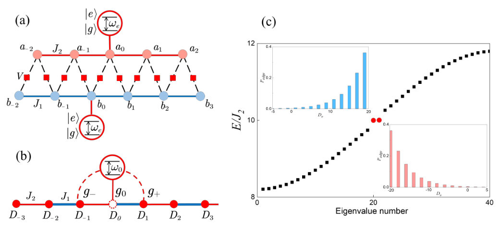
<figcaption class="paper-figure-caption"><b>Fig 1.</b> FIG. 1. (a) A pair of emitters coupled to the triangular ladder model. J1 and J2 denote the nearest-neighbor hopping amplitudes along the upper and lower legs, respectively, and V is the nearest-neighbor interaction on the rungs. (b) Effective dual SSH chain with an emitter coupled to the central site. (c) Two-body energy spectrum of the triangular ladder model. The insets show the two edge states of the effective dual doublon model. The parameters are V = 10J2, J2 = 1, J1 = 0.8J2, and L = 40 sites.</figcaption>
</figure>
<figure class="paper-figure-card">
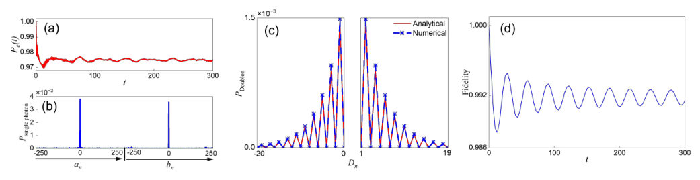
<figcaption class="paper-figure-caption"><b>Fig 2.</b> FIG. 2. (a) Numerical results for the atomic excitation probability Pe(t) as a function of time t. (b) Spatial distribution of the single-photon component in the long-time limit. (c) Spatial distribution of the doublon component in the effective SSH chain. The left (right) panel corresponds to the emitter coupled to site D0 (D1). (d) Time-dependent fidelity between the numerically evolved state and the analytical VDS state. The parameters are g = 0.3J2, ωe = 5J2 (so that ω0 = 10J2), L = 1000 sites, and all other parameters are the same as in Fig. 1.</figcaption>
</figure>
<figure class="paper-figure-card">
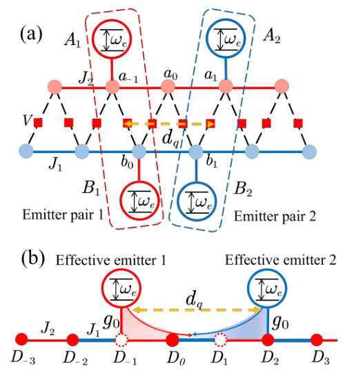
<figcaption class="paper-figure-caption"><b>Fig 3.</b> FIG. 3. (a) Four-body setup consisting of two emitter pairs coupled to the triangular ladder waveguide. (b) Effective model with two emitters coupled to the SSH chain at sites D−1 and D2, respectively; the separation between the two emitters is dq = 3.</figcaption>
</figure>
<figure class="paper-figure-card">
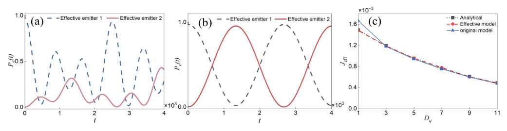
<figcaption class="paper-figure-caption"><b>Fig 4.</b> FIG. 4. Population dynamics of the four-body system for separation dq = 3 in the “face-to-face” configuration. (a) Dynamics for identical emitter frequencies, ωA1 = ωB1 = ωA2 = ωB2 = ω0/2. (b) Dynamics for finite detuning δω = 0.5J2. (c) Comparison between the numerically extracted oscillation frequencies and the analytical prediction of Jeff as a function of the separation dq. The parameter is L = 300 sites and other parameters are consistent with Fig. 2.</figcaption>
</figure>
<figure class="paper-figure-card">
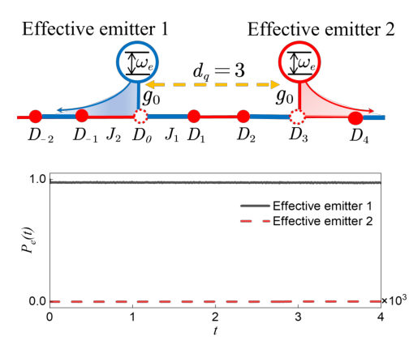
<figcaption class="paper-figure-caption"><b>Fig 5.</b> FIG. 5. Population dynamics of the four-body system for the “back-to-back” configuration with a separation dq = 3. The detuning is set to δω = 0.5J2, and other parameters are consistent with Fig. 4.</figcaption>
</figure>
</div>

<p><strong>Summary.</strong> This paper explores using nonlinear waveguide QED to create and control chiral doublon bound states in a topological waveguide. By mapping the system to an effective SSH chain, the authors derive an effective four-body interaction. The key finding is that by tuning the system parameters, they can suppress unwanted single-photon processes, revealing coherent, tunable dipole-dipole interactions mediated purely by the doublon excitations.</p>
<p><strong>Why it may be interesting.</strong> This work is highly relevant as it uses topological concepts (SSH edge states, chirality) to engineer controllable, non-local interactions in a quantum optical setting, which is a major theme in modern AMO physics and quantum networking.</p>
<details>
<summary>Detailed structure</summary>
<p><strong>Main problem.</strong> The paper investigates the creation and control of chiral doublon bound states within a synthetic topological waveguide to engineer tunable many-body interactions between correlated photon pairs.</p>
<p><strong>Main result.</strong> The study demonstrates that the system supports a chiral bound state whose interaction strength can be controlled by the relative chirality and separation parity of two emitter pairs, leading to coherent Rabi oscillations under specific detuning conditions.</p>
<p><strong>Method.</strong> The analysis employs the vacancy-like dressed state (VDS) theory and adiabatic elimination techniques to map the complex waveguide QED dynamics onto an effective emitter coupled to a dual SSH lattice.</p>
<p><strong>Model / system.</strong> The physical platform is a nonlinear waveguide QED setup realized in a triangular ladder waveguide. The dynamics are modeled by mapping the doublon interactions onto an effective SSH chain, which governs the coupled emitter-bath system.</p>
<p><strong>Key observables.</strong> Coherent Rabi oscillations, the spatial profile of the doublon wave function (showing chirality), and the effective four-body interaction strength ($J_{	ext{eff}}$).</p>
<p><strong>Important parameters / regimes.</strong> The system operates in regimes defined by strong nearest-neighbor interactions ($V \gg J_1, J_2$) and weak coupling for adiabatic elimination ($g \ll J_i, V$).</p>
<p><strong>Assumptions / limitations.</strong> The analysis assumes the doublon dynamics can be accurately described by the VDS theory, and that single-photon exchange channels can be suppressed via frequency detuning to isolate the doublon-mediated interaction.</p>
<p><strong>Figures summary.</strong> Figures illustrate the physical setup (triangular ladder), the effective dual SSH chain, the two-body spectrum, and population dynamics showing the transition from irregular to coherent Rabi oscillations upon detuning.</p>
<p><strong>Paper structure.</strong> The paper progresses by first establishing the mapping to an effective SSH chain using VDS theory. It then extends this to two emitter pairs to derive the effective four-body interaction. Finally, it details the necessary experimental tuning (detuning and Stark shift correction) to observe coherent, doublon-mediated dynamics.</p>
</details>
<details>
<summary>Abstract</summary>
<p>Nonlinear waveguide QED serves as a platform for studying correlated photon dynamics, where its interplay with topological bound states can give rise to unconventional phenomena. We investigate a triangular ladder waveguide in which a pair of emitters forms a doublon bound state through strong nearest-neighbor interactions. By mapping the doublon dynamics onto an effective SSH chain, we show that the system is equivalent to an effective emitter coupled to a topological doublon bath. Using the vacancy-like dressed state approach, we demonstrate the existence of a chiral bound state with a node at the coupling site and an exponentially localized wave function inherited from the SSH edge states. Extending this picture to two emitter pairs, we derive an effective four-body interaction whose strength is determined by the relative chirality and the separation parity of the bound states. When the two bound states face each other, coherent Rabi oscillations emerge; when they are arranged back-to-back or have an even separation, the interaction vanishes. Our results provide a route toward engineering tunable many-body interactions between correlated photon pairs and realizing nonlinear quantum networks based on flying doublons.</p>
</details>
<p><sub><a href="#top">↑ back to top</a></sub></p>

<p><a id="paper-2608.22404"></a></p>
<h3 id="error-propagation-theory-for-variational-non-markovian-open-quantum-dynamics"><a href="http://arxiv.org/abs/2608.22404v1">Error Propagation Theory for Variational Non-Markovian Open Quantum Dynamics</a></h3>
<p><strong>Authors:</strong> Long Cao, Daochi Zhang, Yao Wang, Liwei Ge, Rui-Xue Xu, YiJing Yan, Xiao Zheng<br>
<strong>Type:</strong> theory · <strong>Category:</strong> numerical methods · <strong>PDF:</strong> <a href="https://arxiv.org/pdf/2608.22404v1">https://arxiv.org/pdf/2608.22404v1</a><br>
<strong>Analysis basis:</strong> full PDF text, analyzed in chunks
<strong>Topic relevance:</strong> 🔥 <code>methods for driven-dissipative</code> <strong>4/5</strong> · <code>Keldysh / 2PI / non-Gaussian methods</code> <strong>3/5</strong> · <code>correlated / nonlocal dissipation</code> <strong>3/5</strong> · <code>driven-dissipative phase transition</code> <strong>3/5</strong> · <code>non-equilibrium universality</code> <strong>2/5</strong> · <code>quantum measurements</code> <strong>2/5</strong> · <code>analog quantum simulation</code> <strong>1/5</strong></p>
<div class="figure-strip-hint">↔ Scroll figures horizontally</div>
<div class="paper-figures-scroll">
<figure class="paper-figure-card">
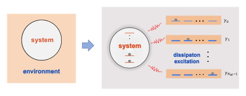
<figcaption class="paper-figure-caption"><b>Fig 1.</b> FIG. 1. Schematic of the fermionic DQME theory, map- ping the original OQS (left) to a dissipaton-embedded system (right). Red and blue bars represent the NS system fermion energy levels and NE memory-carrying dissipaton levels, re- spectively. Broadening of blue bars indicates each dissipa- ton’s decay rate (inverse lifetime). The dissipaton levels can be grouped into NM decay channels, where the levels within each channel share a common decay rate.</figcaption>
</figure>
<figure class="paper-figure-card">
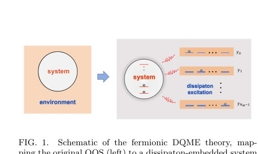
<figcaption class="paper-figure-caption"><b>Fig 2.</b> Figure 1 illustrates the fermionic DQME theory, where the original OQS is mapped to a dissipaton- embedded system characterized by the reduced density tensor (RDT), ˜ρ = {˜ρ(⃗n,⃗n′; ⃗m−, ⃗m+)}. Here, ˜ρ(⃗n,⃗n′; ⃗m−, ⃗m+) = ⟨⟨⃗n,⃗n′; ⃗m−, ⃗m+| ˜ρ⟩⟩, |⃗n,⃗n′; ⃗m−, ⃗m+⟩⟩ = |⃗n,⃗n′⟩⟩S ⊗|⃗m−, ⃗m+⟩⟩E are the basis vectors of the extended Liouville space composed of the system Liouville space (spanned by {|⃗n,⃗n′⟩⟩S}) and the dissipaton space (spanned by {|⃗m−, ⃗m+⟩⟩E}). Vectors ⃗n and ⃗n′ denote system fermion configurations, while ⃗m−and ⃗m+ represent electron-type and hole-type dissipaton configurations, respectively. The RDT ele- ments with |⃗m−, ⃗m+⟩⟩E = |⃗0⟩⟩E (the dissipaton vacuum) yield...</figcaption>
</figure>
<figure class="paper-figure-card">
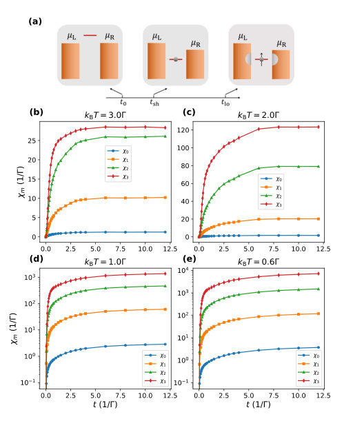
<figcaption class="paper-figure-caption"><b>Fig 3.</b> FIG. 2. (a) Schematic of an open quantum system consisting of an impurity coupled to left (L) and right (R) reservoirs with chemical potentials µL and µR. The gray shaded regions in the reservoirs denote Kondo clouds that screen the impurity’s localized spin. (b) The trajectories of χm(t) (m = 0, 1, 2, 3) at kBT = 3.0 Γ, with Mmax = 3, NM = 4, and Re(γ)min = 9.42 Γ. (c) The trajectories of χm(t) (m = 0, 1, 2, 3) at kBT = 2.0Γ, with Mmax = 3, NM = 5, and Re(γ)min = 6.28 Γ. (d) The trajectories of χm(t) (m = 0, 1, 2, 3) at kBT = 1.0Γ, with Mmax = 3, NM = 6, and Re(γ)min = 3.14 Γ. (e) The trajectories of χm(t) (m = 0, 1, 2, 3) at kBT = 0.6Γ, with Mmax = 3, NM = 7, and Re(γ)min = 1.88 Γ. The...</figcaption>
</figure>
<figure class="paper-figure-card">
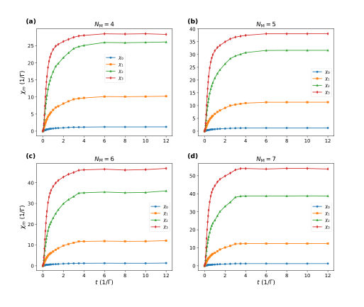
<figcaption class="paper-figure-caption"><b>Fig 4.</b> FIG. 3. Panels (a)–(d) depict χm(t) (m = 0, 1, 2, 3) at kBT = 3.0 Γ for different numbers of decay channels, NM = 4, 5, 6, and 7, respectively. System parameters (in units of Γ): ϵ0 = U0/2 = 2, ∆ϵ = −7, and ∆U = 6.</figcaption>
</figure>
<figure class="paper-figure-card">
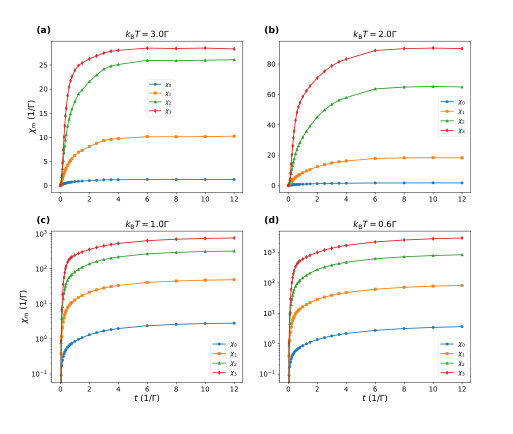
<figcaption class="paper-figure-caption"><b>Fig 5.</b> FIG. 4. Panels (a)–(d) display χm(t) (m = 0, 1, 2, 3) at kBT = 3.0 Γ, 2.0 Γ, 1.0 Γ, and 0.6 Γ, respectively, with NPad´e = 4 decomposition poles and a dissipaton space of size NE = 32. The vertical axes in (c) and (d) use a logarith- mic scale. System parameters (in units of Γ): ϵ0 = U0/2 = 2, ∆ϵ = −7, and ∆U = 6.</figcaption>
</figure>
</div>

<p><strong>Summary.</strong> This work provides a rigorous theoretical framework to analyze how numerical errors accumulate when simulating complex, non-Markovian open quantum dynamics. By identifying an 'error-backflow' mechanism linked to environmental memory, the authors establish a fundamental precision barrier. This guides the design of more robust variational algorithms for challenging quantum simulations.</p>
<p><strong>Why it may be interesting.</strong> This is highly relevant for AMO and open quantum systems because it provides the first quantitative theoretical guidance on the computational limitations inherent in simulating strongly non-Markovian dynamics using modern AI/ML techniques like NQS and PINNs.</p>
<details>
<summary>Detailed structure</summary>
<p><strong>Main problem.</strong> The paper addresses the critical challenge of quantifying error propagation when simulating non-Markovian open quantum dynamics using variational methods.</p>
<p><strong>Main result.</strong> It develops a theoretical framework showing that an intrinsic 'error-backflow' mechanism, driven by environmental memory, establishes a fundamental precision barrier for variational algorithms.</p>
<p><strong>Method.</strong> The authors combine analytical derivations with numerical verification to characterize error evolution, specifically analyzing the Time-Dependent Variational Principle (TDVP) applied to the Dissipation-Embedded Quantum Master Equation (DQME).</p>
<p><strong>Model / system.</strong> The system is an Open Quantum System (OQS), modeled using an Anderson impurity Hamiltonian ($H_T = H_S + H_E + H_{SE}$), whose dynamics are mapped onto a dissipaton-embedded system governed by the DQME.</p>
<p><strong>Key observables.</strong> Error propagation $\langle\delta \hat{O}(t)
angle_	heta$, Non-Markovian error susceptibility $\chi(t)$, and the Reduced Density Tensor ($ ilde{
ho}$).</p>
<p><strong>Important parameters / regimes.</strong> Strongly non-Markovian regime, residual error $r_{\max}$, and environmental memory timescales.</p>
<p><strong>Assumptions / limitations.</strong> The analysis relies on the DQME formalism and the use of variational ansatze (like NQS) to approximate the time evolution.</p>
<p><strong>Figures summary.</strong> Figure 1 schematically illustrates the fermionic DQME mapping to a dissipaton-embedded system. Figure 2 shows the temperature dependence of the error susceptibility $\chi_m(t)$.</p>
<p><strong>Paper structure.</strong> The paper first introduces the variational methods for non-Markovian dynamics, then develops the theoretical framework for error characterization, culminating in the quantitative description of error accumulation via the error-backflow mechanism.</p>
</details>
<details>
<summary>Abstract</summary>
<p>Variational approaches based on neural quantum states and physics-informed neural networks provide powerful paradigms for simulating non-Markovian open quantum dynamics. However, extending these methods into the strongly non-Markovian regime reveals a critical bottleneck: even minute errors in the time evolution can translate into substantial deviations in physical observables. The fundamental origin of this stringent precision requirement, as well as how non-Markovianity governs it, remains an open question.   Here, we develop a theoretical framework that systematically characterizes error propagation in variational non-Markovian dynamics. By combining analytical derivations with numerical verification, we present the first quantitative description of variational error evolution over time. Our analysis uncovers an intrinsic error-backflow mechanism driven by long-lived environmental memory. This mechanism establishes a fundamental precision barrier and provides concrete guidance for designing robust variational algorithms for strongly non-Markovian quantum systems.</p>
</details>
<p><sub><a href="#top">↑ back to top</a></sub></p>

<p><a id="paper-2608.21689"></a></p>
<h3 id="programmable-doppler-real-space-pattern-formation-in-cold-atoms"><a href="http://arxiv.org/abs/2608.21689v1">Programmable Doppler real-space pattern formation in cold atoms</a></h3>
<p><strong>Authors:</strong> Yijun Tang<br>
<strong>Type:</strong> both · <strong>Category:</strong> other · <strong>PDF:</strong> <a href="https://arxiv.org/pdf/2608.21689v1">https://arxiv.org/pdf/2608.21689v1</a><br>
<strong>Analysis basis:</strong> full PDF text, analyzed in chunks
<strong>Topic relevance:</strong> 🔥 <code>analog quantum simulation</code> <strong>4/5</strong> · <code>driven-dissipative phase transition</code> <strong>3/5</strong> · <code>methods for driven-dissipative</code> <strong>3/5</strong> · <code>Keldysh / 2PI / non-Gaussian methods</code> <strong>2/5</strong> · <code>quantum measurements</code> <strong>2/5</strong> · <code>correlated / nonlocal dissipation</code> <strong>1/5</strong> · <code>non-equilibrium universality</code> <strong>1/5</strong></p>
<div class="figure-strip-hint">↔ Scroll figures horizontally</div>
<div class="paper-figures-scroll">
<figure class="paper-figure-card">
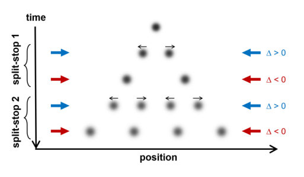
<figcaption class="paper-figure-caption"><b>Fig 1.</b> FIG. 1: Schematic of pattern formation with alternating blue and red detuning. After two split-stop, the initial cloud splits into 4 subpackets. Arrows on the subpackets indicate their center-of-mass moving direction.</figcaption>
</figure>
<figure class="paper-figure-card">
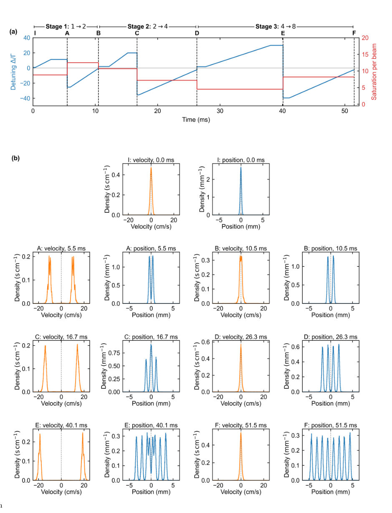
<figcaption class="paper-figure-caption"><b>Fig 2.</b> FIG. 2: Hierarchical formation of an eight-packet one-dimensional real-space distribution using the split-stop protocol. (a) Time-dependent normalized detuning ∆(t)/Γ (blue) and single-beam saturation parameter s(t) (red). The three stages produce the successive 1 →2, 2 →4, and 4 →8 packet configurations. Dashed lines indicate the times I–F. (b) Corresponding velocity-space (orange) and real-space (blue) probability densities. I is initial cloud distribution. A, C, and E shows 2,4 and 8 subpackets at the end of blue-detuned pulses. Subsequent red-detuned pulses reduce their mean velocities to rest at B, D, and F, respectively. Detailed sequence parameters are in Table.I</figcaption>
</figure>
<figure class="paper-figure-card">
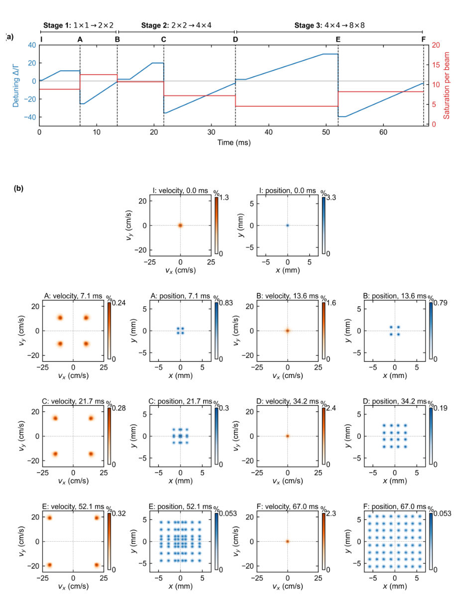
<figcaption class="paper-figure-caption"><b>Fig 3.</b> FIG. 3: Hierarchical formation of an 8 × 8 two-dimensional real-space packet array using simultaneous two-axis split-stop control. (a) Normalized detuning ∆(t)/Γ (blue) and single-beam saturation s(t) (red), applied identically along x and y. The three stages produce the successive 1 × 1 →2 × 2 →4 × 4 →8 × 8 configurations. Dashed lines mark times A–F. (b) Corresponding velocity-space (orange) and real-space (blue) probability densities, including the initial distributions I. Blue-detuned pulses produce four-quadrant velocity splitting at A, C, and E; red-detuned pulses return the packets’ velocity toward rest at B, D, and F. The independently scaled color bars show the percentage of the...</figcaption>
</figure>
<figure class="paper-figure-card">
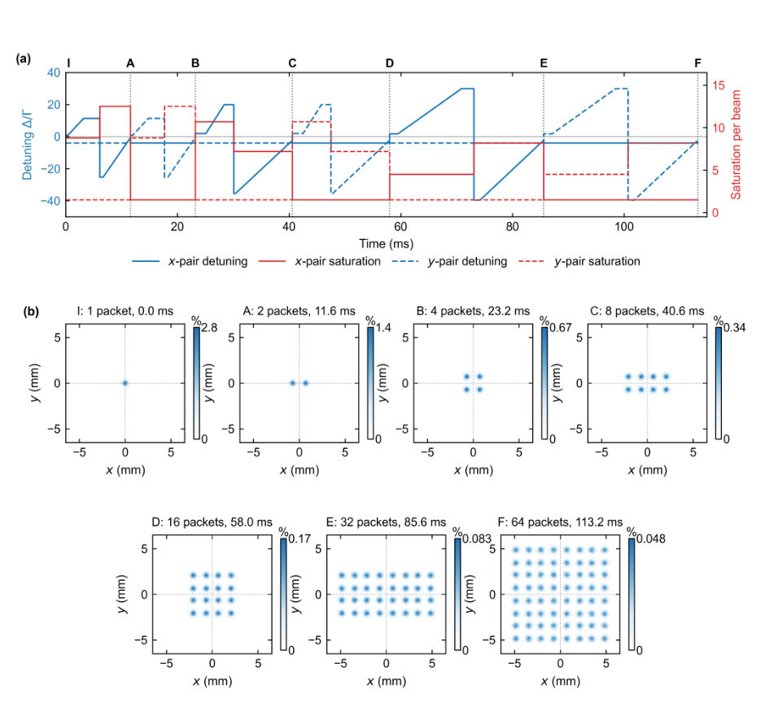
<figcaption class="paper-figure-caption"><b>Fig 4.</b> FIG. 4: Hierarchical formation of an 8 × 8 two-dimensional real-space packet array using independent axis-by-axis split-and-stop control. (a) Independently programmed normalized detunings and single-beam saturations for the x and y beam pairs. (b) Corresponding real-space probability distributions. Alternating control of the two axes successively produces 1 →2 →4 →8 →16 →32 →64 spatial packets, culminating in an 8 × 8 array. The independently scaled color bars show the percentage of the full atomic ensemble contained in each fixed two-dimensional histogram bin.</figcaption>
</figure>
</div>

<p><strong>Summary.</strong> This paper presents a programmable 'split-stop' protocol to create highly ordered, real-space arrays of cold atoms using $^{88}	ext{Sr}$. By alternating between blue-detuned light to split packets and red-detuned light to stop them, the authors recursively multiply the number of atomic packets in both 1D and 2D. The simulation demonstrates forming up to 64 distinct packets, showcasing precise control over quantum matter wave dynamics.</p>
<p><strong>Why it may be interesting.</strong> This work provides a detailed, controllable mechanism for generating complex, ordered spatial structures in quantum gases, which is highly relevant for quantum simulation and quantum state engineering in AMO physics.</p>
<details>
<summary>Detailed structure</summary>
<p><strong>Main problem.</strong> The paper addresses the challenge of creating programmable, spatially resolved patterns of cold atoms by combining two distinct light-matter interactions: blue-detuned splitting and red-detuned stopping.</p>
<p><strong>Main result.</strong> The authors successfully demonstrated the theoretical and simulated realization of forming large arrays, achieving up to an 8-packet 1D array and a 64-packet 2D square array.</p>
<p><strong>Method.</strong> The dynamics are modeled using stochastic photon-jump simulations that incorporate absorption and spontaneous-emission recoil, simulating a recursive 'split-stop' protocol.</p>
<p><strong>Model / system.</strong> The physical system is cold atoms, specifically utilizing the 689 nm transition of $^{88}	ext{Sr}$. The protocol is controlled by time-dependent detuning and saturation parameters applied via multiple laser beams.</p>
<p><strong>Key observables.</strong> The primary observables are the final spatial distribution of the atoms, quantified by the number of separated packets (e.g., 8 in 1D, 64 in 2D) and the resulting effective kinetic temperature.</p>
<p><strong>Important parameters / regimes.</strong> The process is controlled by time-dependent normalized detuning $\delta(t)$ and single-beam saturation parameter $s(t)$. The final kinetic temperature achieved is around $1.2 \mu	ext{K}$ (1D) and $0.8 \mu	ext{K}$ (2D).</p>
<p><strong>Assumptions / limitations.</strong> The 1D model assumes mutual incoherence of counter-propagating beams, and the internal state follows the instantaneous optical steady state adiabatically. Magnetic field and gravity effects are neglected.</p>
<p><strong>Figures summary.</strong> Figure 1 schematically shows the alternating blue/red detuning cycle. Figure 2 illustrates the 1D hierarchical formation ($1 	o 2 	o 4 	o 8$). Figure 3 shows the 2D hierarchical formation using simultaneous control, and Figure 4 details the $8 	imes 8$ array formation using independent axis-by-axis control.</p>
<p><strong>Paper structure.</strong> The paper details the core split-stop protocol, models the dynamics using stochastic simulations, and then systematically demonstrates the scaling from 1D (up to 8 packets) to 2D (up to 64 packets) using both simultaneous and sequential control schemes, providing detailed control parameters in tables.</p>
</details>
<details>
<summary>Abstract</summary>
<p>Red-detuned Doppler cooling decelerates atomic motion toward zero velocity, whereas blue-detuned light produces acceleration that separates a cold cloud into finite-velocity packets. Here we combine these complementary dynamics in a programmable split-stop protocol for real-space pattern formation. During each stage, a blue-detuned pulse splits existing packets and drives them apart, while a subsequent red-detuned pulse returns their center-of-mass velocities close to zero, results in spatially resolved stationary packets. Repeating this process recursively multiplies the number of packets in real space. We model the dynamics using stochastic photon-jump simulations that include absorption and spontaneous-emission recoil in one and two dimensions. Using experimentally realistic parameters for the $689~\mathrm{nm}$ ${}^{1}S_{0}\rightarrow{}^{3}P_{1}$ transition of ${}^{88}\mathrm{Sr}$, we demonstrate an 8-packet one-dimensional array and a 64-packet two-dimensional square array.</p>
</details>
<p><sub><a href="#top">↑ back to top</a></sub></p>

<p><a id="paper-2608.21578"></a></p>
<h3 id="scaling-vs-entanglement-in-measurement-induced-phase-transition-for-non-integrable-systems"><a href="http://arxiv.org/abs/2608.21578v1">Scaling vs entanglement in measurement-induced phase transition for non-integrable systems</a></h3>
<p><strong>Authors:</strong> Paranjoy Chaki, Protyush Nandi, Subinay Dasgupta, Ujjwal Sen<br>
<strong>Type:</strong> theory · <strong>Category:</strong> statistical mechanics · <strong>PDF:</strong> <a href="https://arxiv.org/pdf/2608.21578v1">https://arxiv.org/pdf/2608.21578v1</a><br>
<strong>Analysis basis:</strong> full PDF text, analyzed in chunks
<strong>Topic relevance:</strong> 🔥 <code>quantum measurements</code> <strong>4/5</strong> · <code>driven-dissipative phase transition</code> <strong>3/5</strong> · <code>non-equilibrium universality</code> <strong>3/5</strong> · <code>analog quantum simulation</code> <strong>2/5</strong> · <code>methods for driven-dissipative</code> <strong>2/5</strong> · <code>correlated / nonlocal dissipation</code> <strong>1/5</strong> · <code>scars &amp; prethermalization</code> <strong>1/5</strong></p>
<div class="figure-strip-hint">↔ Scroll figures horizontally</div>
<div class="paper-figures-scroll">
<figure class="paper-figure-card">
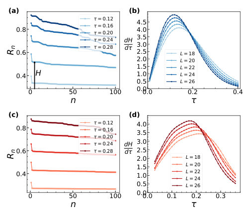
<figcaption class="paper-figure-caption"><b>Fig 1.</b> Figure 1. Behaviour of the survival probability with the num- ber of measurements. Panels (a) and (c) show the survival prob- ability (Rn) as a function of the number of measurements (n) for τ = 0.12, 0.16, 0.20, 0.24, and 0.28 with system size L = 26, corresponding to the transverse-field Ising model with a longitudi- nal field and the ANNNI model, respectively where τ is the period of measurement. For the Ising model, the parameters are chosen as hz = 0.5 and hx = 0.6, while for the ANNNI model the parameters are κ = 0.2 and hz = 0.2. The different values of τ are represented by sequential blue and red color gradients in panels (a) and (c) re- spectively, as indicated in the legends....</figcaption>
</figure>
<figure class="paper-figure-card">
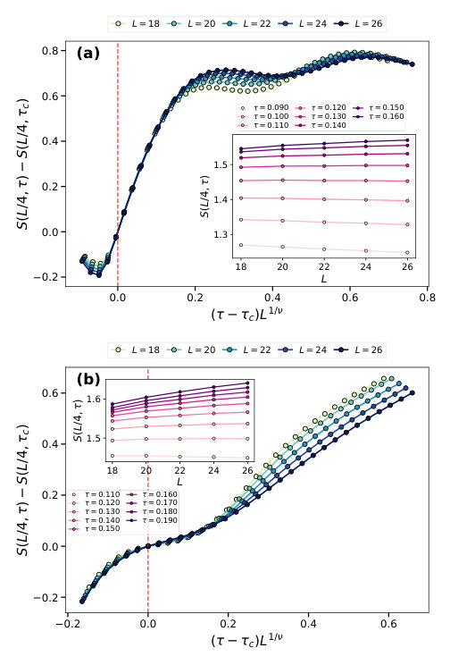
<figcaption class="paper-figure-caption"><b>Fig 2.</b> Figure 2. Behavior of entanglement with system size for initially +Z polarized initial state. Panel (a) shows the scaling collapse of entanglement entropy for transverse field Ising model with longitu- dinal field with hz = 0.5 and hx = 0.6. To that end, we consider the horizontal axis as (τ −τc)L1/ν and the vertical axis is S(L/2, τ) − S(L/2, τc). Here we have considered the system sizes L = 18, 20, 22, 24, 26. In the inset, we plot S(L/4, τ) vs L for different τ values given by τ = 0.90, 0.10, 0.11, ..., 0.14 respectively. Panel (b) corresponds to the S(L/2, τ) −S(L/2, τc) vs. (τ −τc)L1/ν graph for the ANNNI model for the parameters κ = 0.2 and hz = 0.2 for system sizes L = 18, 20, 22,...</figcaption>
</figure>
<figure class="paper-figure-card">
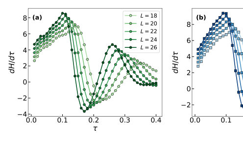
<figcaption class="paper-figure-caption"><b>Fig 3.</b> Figure 3. Variation of survival probability for initial GHZ state. Panel (a) shows the behavior of dH</figcaption>
</figure>
<figure class="paper-figure-card">
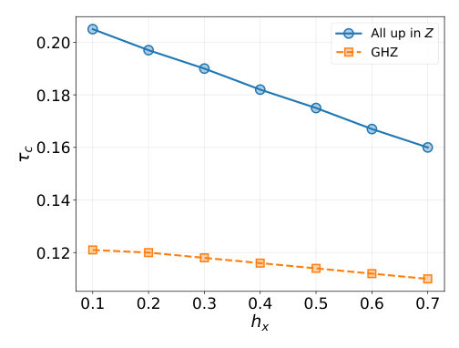
<figcaption class="paper-figure-caption"><b>Fig 4.</b> Figure 4. Dependence of transition point with longitudinal field strength. In this figure, the horizontal axis denotes the longitudinal field strength (hx) and the vertical axis denotes the transition point (τc). The curve corresponding to initially +Z polarized configura- tion is denoted by blue line with circular marker and the curve corre- sponding to GHZ state is denoted by red curve with square markers.</figcaption>
</figure>
<figure class="paper-figure-card">
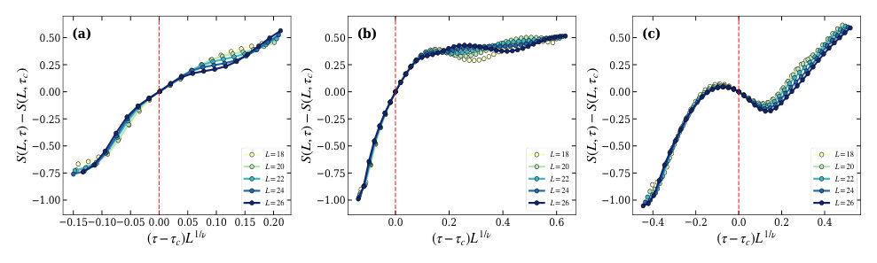
<figcaption class="paper-figure-caption"><b>Fig 5.</b> Figure 5. Scaling collapse of entanglement entropy. Scaling collapse of the entanglement entropy, shown by plotting S(L, τ) −S(L, τc) as a function of the rescaled variable (τ −τc)L1/ν. Panel (a) presents the results for the TFIM with hz = 0.5. Panel (b) corresponds to the TFIM with longitudinal field with hz = 0.5 and hx = 0.6. Panel (c) shows the results for the ANNNI with hz = 0.2 and κ = 0.2.</figcaption>
</figure>
</div>

<p><strong>Summary.</strong> This paper investigates Measurement-Induced Phase Transitions (MIPTs) in quantum spin models, extending the study from integrable to non-integrable systems. By analyzing both survival probability and entanglement entropy, the authors confirm the robustness of the transition. Crucially, they demonstrate that the initial entanglement of the system dictates the scaling behavior of the transition point with system size.</p>
<p><strong>Why it may be interesting.</strong> This work directly addresses non-equilibrium phase transitions in interacting quantum systems, which is a major area of modern condensed matter theory. The comparison between integrable and non-integrable dynamics provides concrete insights into how system symmetries affect quantum criticality under measurement.</p>
<details>
<summary>Detailed structure</summary>
<p><strong>Main problem.</strong> The study investigates the persistence and scaling behavior of Measurement-Induced Phase Transitions (MIPTs) when moving from integrable to non-integrable quantum systems.</p>
<p><strong>Main result.</strong> MIPTs persist in non-integrable variants of the TFIM, and the critical scaling of the transition point ($\tau_c$) is highly dependent on the initial quantum state, particularly when comparing product states to highly entangled GHZ states.</p>
<p><strong>Method.</strong> The analysis uses diagnostics like survival probability and bipartite entanglement entropy, employing finite-size scaling techniques to characterize the transition point $\tau_c$ across different system sizes.</p>
<p><strong>Model / system.</strong> The models studied include the Transverse-Field Ising Model (TFIM) with longitudinal field and the Axial Next-Nearest-Neighbor Ising (ANNNI) model. The dynamics are governed by deterministic global measurements applied repeatedly to the system state.</p>
<p><strong>Key observables.</strong> Survival Probability ($R_n$), Bipartite Entanglement Entropy ($S$), and the critical measurement rate ($\tau_c$).</p>
<p><strong>Important parameters / regimes.</strong> System size ($L$), initial state (product state vs. GHZ state), and the longitudinal field strength ($h_x$).</p>
<p><strong>Assumptions / limitations.</strong> The analysis relies on the assumption that deterministic global measurements are performed, and that the survival probability and entanglement entropy are reliable diagnostics for the MIPT.</p>
<p><strong>Figures summary.</strong> Figures illustrate the decay of survival probability ($R_n$) and its derivative ($dH/d\tau$) for both TFIM and ANNNI models, showing characteristic transitions. Scaling analysis plots are used to extract the system size dependence of the critical point $\tau_c$.</p>
<p><strong>Paper structure.</strong> The paper establishes the persistence of MIPTs in non-integrable systems by comparing results to the integrable TFIM. It then analyzes the scaling of the transition point $\tau_c$ using two distinct initial states (product and GHZ) to highlight the crucial role of initial entanglement.</p>
</details>
<details>
<summary>Abstract</summary>
<p>We find that the measurement-induced phase transition generated by deterministic global measurements, previously observed in the integrable transverse-field Ising model (TFIM), persists in non-integrable variants of the same. To address this question, we consider the TFIM with longitudinal field and the axial next-nearest-neighbor Ising (ANNNI) model. We show that both the survival probability and the bipartite entanglement entropy consistently capture a transition between area-law and volume-law entangled phases for two distinct initial states: a product state with all spins polarized along the transverse direction and a Greenberger-Horne-Zeilinger (GHZ) state. Finite-size scaling reveals a pronounced initial state dependence: for the polarized product state, the transition point follows an inverse-square-root scaling with system size in both non-integrable models, consistent with the integrable TFIM, whereas for the GHZ initial state, it deviates from this scaling and approaches zero considerably more slowly in the non-integrable models than in the integrable TFIM. These results establish the robustness of measurement-induced transitions under deterministic measurements against integrability breaking while highlighting the crucial role of the initial state in governing their scaling behavior.</p>
</details>
<p><sub><a href="#top">↑ back to top</a></sub></p>

<p><a id="paper-2608.21788"></a></p>
<h3 id="coexistence-of-magnon-induced-optical-vortex-and-gaussian-beam-scattering-assisted-by-rotational-umklapp-process"><a href="http://arxiv.org/abs/2608.21788v1">Coexistence of Magnon-Induced Optical Vortex and Gaussian Beam Scattering Assisted by Rotational Umklapp Process</a></h3>
<p><strong>Authors:</strong> Ryusuke Hisatomi, Kotaro Taga, Hisakazu Matsuki, Shutaro Karube, Yoichi Shiota, Teruo Ono<br>
<strong>Type:</strong> both · <strong>Category:</strong> other · <strong>PDF:</strong> <a href="https://arxiv.org/pdf/2608.21788v1">https://arxiv.org/pdf/2608.21788v1</a><br>
<strong>Analysis basis:</strong> full PDF text, analyzed in chunks
<strong>Topic relevance:</strong> 🔥 <code>quantum optics experiment</code> <strong>4/5</strong> · <code>analog quantum simulation</code> <strong>3/5</strong> · <code>interference shaping light</code> <strong>3/5</strong> · <code>Keldysh / 2PI / non-Gaussian methods</code> <strong>1/5</strong> · <code>correlated / nonlocal dissipation</code> <strong>1/5</strong> · <code>driven-dissipative phase transition</code> <strong>1/5</strong> · <code>methods for driven-dissipative</code> <strong>1/5</strong> · <code>quantum measurements</code> <strong>1/5</strong></p>
<div class="figure-strip-hint">↔ Scroll figures horizontally</div>
<div class="paper-figures-scroll">
<figure class="paper-figure-card">
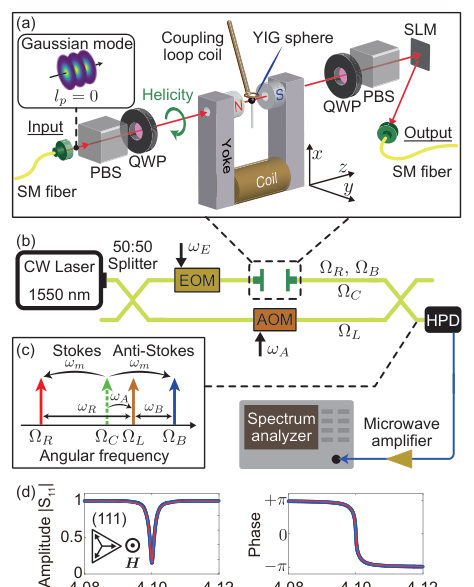
<figcaption class="paper-figure-caption"><b>Fig 1.</b> FIG. 1. Experimental setup and characterization of the uni- form magnon mode. (a) Optical configuration for free-space light propagation. A spherical YIG single crystal (0.5-mm di- ameter) is placed in a magnetic circuit (H ∥⟨111⟩∥z, replac- ing the ⟨100⟩axis [12]). A single-loop coil excites the uniform magnon (Kittel) mode. Quarter-wave plates (QWPs) and po- larizing beam splitters (PBSs) resolve the light helicities. An incident Gaussian beam focused to ∼100 µm is injected into the YIG sphere; coaxially scattered light is reflected by a spa- tial light modulator (SLM) and coupled into a single-mode (SM) fiber to identify the optical orbital angular momentum (OAM). (b) Optical heterodyne...</figcaption>
</figure>
<figure class="paper-figure-card">
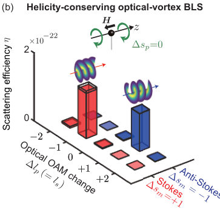
<figcaption class="paper-figure-caption"><b>Fig 2.</b> FIG. 2. Scattering efficiencies of the Stokes and anti- Stokes sidebands. Quantitative comparisons are shown for (a) helicity-inversion Gaussian-beam Brillouin light scatter- ing (BLS) and (b) helicity-conserving optical-vortex BLS un- der an external magnetic field of H ∥⟨111⟩. The red and blue bars represent the scattering efficiencies of the Stokes and anti-Stokes sidebands, respectively. The height of each colored bar indicates the mean scattering efficiency, while the difference between the top of the black wireframe and the bar denotes the standard deviation estimated from six indepen- dent measurements. Note that the vertical axes in (a) and (b) differ by one order of magnitude. The...</figcaption>
</figure>
<figure class="paper-figure-card">
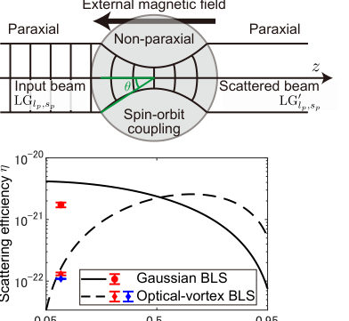
<figcaption class="paper-figure-caption"><b>Fig 3.</b> FIG. 3. Normalized numerical aperture (NA) dependence of the scattering efficiencies. (a) Schematic of light prop- agation around the spherical YIG sample. (b) Theoretical curves and experimental data for the NA dependences of the helicity-inversion Gaussian-beam BLS (solid line), described by Eq. (B2), and the helicity-conserving optical-vortex BLS (dashed line), described by Eq. (A3). The experimentally observed scattering efficiencies with their respective stan- dard deviations [from Figs. 2(a) and 2(b)] are plotted at sin θ = 0.11. Red and blue denote the Stokes and anti-Stokes processes, respectively. This experimental NA value is es- timated from the incident beam diameter of 50 µm...</figcaption>
</figure>
</div>

<p><strong>Summary.</strong> This research explores magnon-induced Brillouin light scattering in YIG crystals, demonstrating the coexistence of two scattering types: vortex and Gaussian-beam. The key finding is that the crystal lattice's rotational Umklapp process enables the Gaussian-beam scattering, which contradicts simple angular momentum conservation rules. The relative strength of these two processes is shown to be highly dependent on how tightly the light is focused.</p>
<p><strong>Why it may be interesting.</strong> This work bridges quantum optics (structured light, OAM/SAM) with condensed matter magnetism (magnons) by identifying a symmetry-breaking mechanism (Umklapp process) that allows for novel light-matter interactions, relevant to engineered quantum light sources.</p>
<details>
<summary>Detailed structure</summary>
<p><strong>Main problem.</strong> The paper investigates the coexistence of two distinct magnon-induced Brillouin light scattering (BLS) pathways: optical-vortex scattering and Gaussian-beam scattering, challenging conventional angular momentum conservation rules.</p>
<p><strong>Main result.</strong> The coexistence is experimentally demonstrated and theoretically explained by invoking the rotational Umklapp process provided by the crystal lattice, leading to a predicted reversal in the relative efficiencies of the two scattering channels with increasing light focusing.</p>
<p><strong>Method.</strong> The study combines experimental measurements of scattering efficiencies using optical heterodyne detection with theoretical calculations based on a microscopic framework involving spin-orbit-coupled light modes.</p>
<p><strong>Model / system.</strong> The experiment uses a spherical YIG single crystal oriented along the &lt;111&gt; axis, studying the interaction between focused light and uniform magnons (Kittel mode) under an external magnetic field.</p>
<p><strong>Key observables.</strong> Scattering efficiencies ($\eta$) for Stokes and anti-Stokes sidebands, measured for both helicity-inversion (Gaussian-beam) and helicity-conserving (optical-vortex) processes.</p>
<p><strong>Important parameters / regimes.</strong> External magnetic field orientation ($\mathbf{H} \parallel \langle 111 
angle$), light focusing degree (related to NA), and the magnon resonance frequency ($\omega_m/2\pi = 4.10$ GHz).</p>
<p><strong>Assumptions / limitations.</strong> The analysis assumes the crystal lattice mediates the necessary angular momentum via the rotational Umklapp process, and that the light can be modeled as converting from paraxial to spin-orbit-coupled modes under strong focusing.</p>
<p><strong>Figures summary.</strong> Figure 1 details the experimental setup and confirms the magnon resonance. Figure 2 presents measured BLS efficiencies comparing Gaussian-beam and optical-vortex scattering. Figure 3 illustrates the dependence of scattering efficiencies on the degree of light focusing (NA).</p>
<p><strong>Paper structure.</strong> The paper establishes the theoretical background in optomagnonics, details the experimental setup and measurements of two scattering channels, provides theoretical derivations for the scattering efficiencies using a microscopic framework, and concludes by analyzing the dependence of the relative efficiencies on light focusing.</p>
</details>
<details>
<summary>Abstract</summary>
<p>The exploitation of crystal-lattice symmetries to engineer angular momentum transfer between structured light and magnons marks a novel frontier for optomagnonic research. In Brillouin light scattering, when focused light propagates parallel to an external magnetic field and interacts with ferromagnetic uniform magnons, only optical-vortex scattering is expected to be permitted. Due to the combined effects of magneto-optical coupling and optical spin-orbit interaction, the transfer of magnon spin angular momentum to photon orbital angular momentum allows for this distinctive scattering phenomenon. Here, we experimentally demonstrate that, for a specific ferromagnetic crystal orientation, Gaussian-beam scattering coexists with the optical-vortex scattering, contrary to conventional expectations based on angular momentum conservation between magnons and photons. We show that the crystal lattice, via the rotational Umklapp process, provides the missing angular momentum required for the Gaussian-beam scattering. Furthermore, we predict that as the degree of light focusing increases, the relative efficiencies of the Gaussian-beam and optical-vortex scattering processes reverse.</p>
</details>
<p><sub><a href="#top">↑ back to top</a></sub></p>

<p><a id="paper-2608.21959"></a></p>
<h3 id="experimental-investigation-of-tunable-order-hilbert-space-ergodicity"><a href="http://arxiv.org/abs/2608.21959v1">Experimental Investigation of Tunable-Order Hilbert-Space Ergodicity</a></h3>
<p><strong>Authors:</strong> Zou-Wei Pan, Wenquan Liu, Xing Rong<br>
<strong>Type:</strong> both · <strong>Category:</strong> statistical mechanics · <strong>PDF:</strong> <a href="https://arxiv.org/pdf/2608.21959v1">https://arxiv.org/pdf/2608.21959v1</a><br>
<strong>Analysis basis:</strong> full PDF text, analyzed in chunks
<strong>Topic relevance:</strong> 🔥 <code>scars &amp; prethermalization</code> <strong>4/5</strong> · <code>QC/QI experiment</code> <strong>3/5</strong> · <code>analog quantum simulation</code> <strong>2/5</strong> · <code>driven-dissipative phase transition</code> <strong>2/5</strong> · <code>non-equilibrium universality</code> <strong>2/5</strong> · <code>methods for driven-dissipative</code> <strong>1/5</strong> · <code>quantum measurements</code> <strong>1/5</strong></p>
<div class="figure-strip-hint">↔ Scroll figures horizontally</div>
<div class="paper-figures-scroll">
<figure class="paper-figure-card">
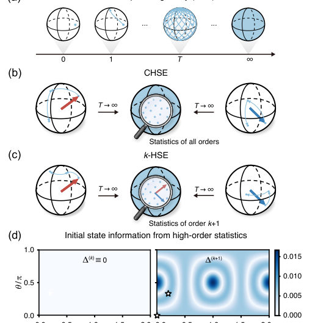
<figcaption class="paper-figure-caption"><b>Fig 1.</b> FIG. 1. Hilbert-space ergodicity. (a) Analogous to clas- sical ergodicity, HSE describes the property that quantum dy- namics uniformly explores the Hilbert space in the long-time limit. (b)–(c) Comparison between HSE at infinite order (b, CHSE) and at finite order (c, k-HSE). A distinctive feature of k-HSE dynamics is that initial-state information survives in the statistics of order k+1 and higher. (d) A qubit example, with the model specified in the text. Here (θ, ϕ) denote the polar and azimuthal angles of the initial state.</figcaption>
</figure>
<figure class="paper-figure-card">
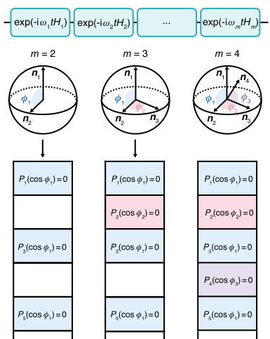
<figcaption class="paper-figure-caption"><b>Fig 2.</b> FIG. 2. Realizing tunable HSE with m-tone drives. (a) Design of the drive: a sequence of m rotations about dis- tinct axes Hj = nj·σ, with rationally independent frequencies {ωj}. (b) Progressively realizing higher-order HSE by adding rotation axes and tuning their angles. The rows labeled by ℓ represent the ℓ-th HSE equation in Eq. (3). Each equation is fulfilled by adjusting ϕj = ∠(nj, nj+1) with satisfied condi- tions indicated by colored cells. The number of consecutively colored cells counted from the top determines the k-HSE or- der of the m-tone drive. Notably, setting ϕ1 = π/2 satisfies all odd rows. Each even row is then filled by adding one ad- ditional rotation axis at a time, so...</figcaption>
</figure>
<figure class="paper-figure-card">
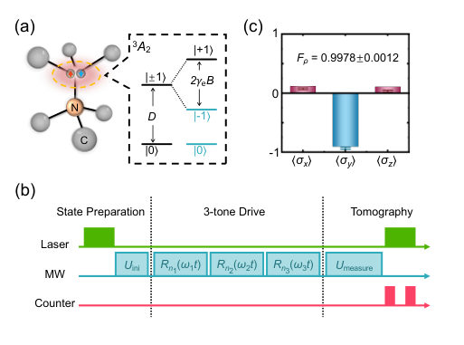
<figcaption class="paper-figure-caption"><b>Fig 3.</b> FIG. 3. NV center system and experimental scheme. (a) Diamond lattice and energy levels of the NV center. The electron-spin states |ms = 0⟩≡|0⟩and |ms = −1⟩≡|1⟩are identified as the experimental qubit. (b) Experimental pulse sequence, consisting of state preparation, execution of the 3- tone drive, and quantum state tomography. Measurement operations Umeasure ∈{I, RX(π), RX(±π/2), RY (±π/2)} are used to read out the full density matrix. (c) Illustrative to- mography result for |ψ(0)⟩= |0⟩and t = 100. Dots with error bars represent experimental data, and gray bars correspond to theoretical predictions.</figcaption>
</figure>
<figure class="paper-figure-card">
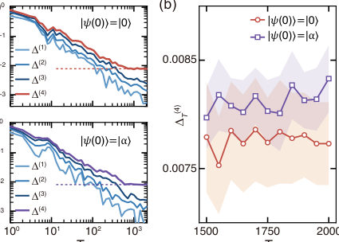
<figcaption class="paper-figure-caption"><b>Fig 4.</b> FIG. 4. Experimental results for the 3-tone drive. (a) Trace distances ∆(k) T up to the fourth order for initial states |ψ(0)⟩= |0⟩(upper panel) and |ψ(0)⟩= |α⟩≡cos π</figcaption>
</figure>
</div>

<p><strong>Summary.</strong> This paper explores Hilbert-space ergodicity (HSE) in driven quantum systems, proposing a theoretical framework and experimental realization using NV centers in diamond. The authors show that specific multi-tone drives can achieve tunable $k$-HSE, while also revealing that initial-state information can persist in higher-order statistical moments even when the system appears ergodic at lower orders.</p>
<p><strong>Why it may be interesting.</strong> This work provides a concrete, experimentally verifiable mechanism (tunable drives) to probe the hierarchy of quantum ergodicity, offering deep insights into how memory of initial conditions can persist in complex, driven quantum dynamics.</p>
<details>
<summary>Detailed structure</summary>
<p><strong>Main problem.</strong> The paper investigates Hilbert-space ergodicity (HSE), a framework for studying thermalization in driven quantum systems that extends beyond static systems studied by ETH.</p>
<p><strong>Main result.</strong> They demonstrate that specific $m$-tone drives can realize $k$-HSE up to $k=2m-3$, and crucially, they show that initial-state information survives in higher-order statistics ($\Delta(4)$) even when lower-order ergodicity is achieved.</p>
<p><strong>Method.</strong> The study combines theoretical proofs showing the construction of $k$-HSE drives with experimental verification using a nitrogen-vacancy center in diamond to measure temporal moments.</p>
<p><strong>Model / system.</strong> The theoretical model involves designing $m$-tone quasiperiodic drives on qubits. Experimentally, the platform is a single nitrogen-vacancy (NV) center in diamond, where the qubit is encoded in the spin-1 electronic ground state.</p>
<p><strong>Key observables.</strong> The primary diagnostic is the trace distance $\Delta(k) = rac{1}{2} 	ext{Tr}[
ho^{(k)}_T - 
ho^{(k)}_{	ext{Haar}}]$, which measures the deviation from Haar randomness at the $k$-th moment.</p>
<p><strong>Important parameters / regimes.</strong> The order of ergodicity, $k$, is tunable by the number of tones, $m$, up to $k=2m-3$. The initial state dependence is quantified by the angle $\gamma$ between the initial state vector and the first drive axis.</p>
<p><strong>Assumptions / limitations.</strong> The theoretical analysis assumes the limit of the trace distance equals the trace distance of the limit. Experimentally, state reconstruction relies on measuring photoluminescence rates.</p>
<p><strong>Figures summary.</strong> Figures illustrate the concept of $k$-HSE decay, showing $\Delta(k)$ vanishing for low $k$ but plateauing at a non-zero, initial-state-dependent value for higher $k$. The NV center setup and pulse sequences are also detailed.</p>
<p><strong>Paper structure.</strong> The paper first introduces HSE as a complement to ETH, then theoretically proposes and proves the construction of $k$-HSE drives. This is followed by experimental verification using the NV center, culminating in a detailed analysis of the initial-state dependence of higher-order statistics.</p>
</details>
<details>
<summary>Abstract</summary>
<p>Hilbert-space ergodicity (HSE) provides a new framework for studying thermalization in driven quantum systems, complementing the eigenstate thermalization hypothesis, which is restricted to static systems. This ergodicity is hierarchical: by quantifying how randomly the dynamics explores the Hilbert space, one obtains a family of levels termed $k$-HSE. While HSE has been observed at the lowest and highest levels, finite-order HSE dynamics remains largely unexplored due to the difficulty of constructing such drives. Here, we explore this intermediate regime and uncover its distinctive physics. We first propose and prove that a family of $m$-tone drives on qubits realizes $k$-HSE up to $k = 2m{-}3$, with drive parameters determined at $O(k)$ cost. Using a single nitrogen-vacancy center in diamond, we verify this design by showing that a 3-tone drive realizes 3-HSE, with fourth-order statistics depending on the initial state. Further in-depth theoretical analysis shows that this initial-state dependence is generic across drives, demonstrating the possibility of recovering the initial state from higher-order statistics even when the dynamics is ergodic. Our work broadens the study of quantum ergodicity and reveals intriguing physics within its hierarchy.</p>
</details>
<p><sub><a href="#top">↑ back to top</a></sub></p>

<p><a id="paper-2608.23455"></a></p>
<h3 id="cramer-rao-inequality-generalizes-the-equilibrium-energy-fluctuation-response-relation-to-nonequilibrium-steady-states"><a href="http://arxiv.org/abs/2608.23455v1">Cramer-Rao Inequality Generalizes the Equilibrium Energy Fluctuation-Response Relation to Nonequilibrium Steady States</a></h3>
<p><strong>Authors:</strong> Shaofan Liu, Raphael Chetrite, Andre C. Barato<br>
<strong>Type:</strong> theory · <strong>Category:</strong> statistical mechanics · <strong>PDF:</strong> <a href="https://arxiv.org/pdf/2608.23455v1">https://arxiv.org/pdf/2608.23455v1</a><br>
<strong>Analysis basis:</strong> full PDF text, analyzed in chunks
<strong>Topic relevance:</strong> 🔥 <code>non-equilibrium universality</code> <strong>4/5</strong> · <code>driven-dissipative phase transition</code> <strong>3/5</strong> · <code>Keldysh / 2PI / non-Gaussian methods</code> <strong>2/5</strong> · <code>methods for driven-dissipative</code> <strong>2/5</strong> · <code>analog quantum simulation</code> <strong>1/5</strong> · <code>correlated / nonlocal dissipation</code> <strong>1/5</strong> · <code>quantum measurements</code> <strong>1/5</strong></p>
<div class="figure-strip-hint">↔ Scroll figures horizontally</div>
<div class="paper-figures-scroll">
<figure class="paper-figure-card">

<figcaption class="paper-figure-caption"><b>Fig 1.</b> FIG. 1. Plots for the active particle in a harmonic potential. (a) Quantities entering Eq. (1) as a function of the thermo- dynamic affinity f. (b) Ratios η1 and η2 as a functions of the thermodynamic affinity f.</figcaption>
</figure>
<figure class="paper-figure-card">

<figcaption class="paper-figure-caption"><b>Fig 2.</b> FIG. 2. Plots for the kinetic proofreading model. (a) Quan- tities entering Eq. (1) as a function of the thermodynamic affinity ∆µ. (b) Ratios η1 and η2 as functions of ∆µ.</figcaption>
</figure>
<figure class="paper-figure-card">

<figcaption class="paper-figure-caption"><b>Fig 3.</b> FIG. 3. Plots for the KMP model. (a) Quantities entering Eq. (1), divided by the system size N, as a function of the thermodynamic affinity Fq. (b) Ratios η1 and η2 as a function of Fq.</figcaption>
</figure>
</div>

<p><strong>Summary.</strong> This paper generalizes the fundamental fluctuation-response theorem from equilibrium statistical mechanics to arbitrary nonequilibrium steady states using the Cramér-Rao Inequality. It derives a universal bound involving energy fluctuations, energy response, and Fisher information. The bound is successfully demonstrated across diverse physical models, confirming its utility as a powerful diagnostic tool for non-equilibrium thermodynamics.</p>
<p><strong>Why it may be interesting.</strong> This work provides a powerful, universal mathematical tool (the CRB) to constrain the thermodynamics of non-equilibrium systems, which is crucial for understanding energy dissipation and fluctuation theorems in complex, driven matter.</p>
<details>
<summary>Detailed structure</summary>
<p><strong>Main problem.</strong> The paper aims to generalize the known equilibrium energy fluctuation–response relation to the complex regime of nonequilibrium steady states (NESSs).</p>
<p><strong>Main result.</strong> They establish a universal constraint, derived from a form of the Cramér-Rao Inequality, that relates the energy fluctuations, the energy response to inverse temperature, and the Fisher information in NESSs.</p>
<p><strong>Method.</strong> The primary method involves applying the generalized Cramér-Rao Bound (CRB) to the stationary probability distribution $\Pi$ of the system, treating the inverse temperature $eta$ as the control parameter.</p>
<p><strong>Model / system.</strong> The analysis is tested on three diverse models: an active particle in a harmonic potential, a kinetic proofreading network, and a one-dimensional heat conduction model (KMP model).</p>
<p><strong>Key observables.</strong> Average energy $\langle E 
angle$, energy variance $   ext{Var}(E)$, Fisher information $I_eta$, and the response term $\partial_eta \langle E 
angle$.</p>
<p><strong>Important parameters / regimes.</strong> The thermodynamic affinity (driving force) which quantifies the deviation from equilibrium, such as the free energy difference $\Delta\mu$ or temperature difference $F_q$.</p>
<p><strong>Assumptions / limitations.</strong> The analysis assumes the existence of a reference equilibrium distribution and that the temperature notion remains well-defined, consistent with generalized detailed balance.</p>
<p><strong>Figures summary.</strong> Figures illustrate how the inequality is satisfied across different driving forces ($f$ or $\Delta\mu$ or $F_q$), showing the saturation at equilibrium and the behavior of the derived ratios $\eta_1$ and $\eta_2$ as the system moves away from equilibrium.</p>
<p><strong>Paper structure.</strong> The paper introduces the general CRB, derives the inequality in its linear and non-linear forms, and then systematically applies this framework to three distinct physical models (active particle, proofreading, KMP) to validate the universality of the bound.</p>
</details>
<details>
<summary>Abstract</summary>
<p>Equilibrium steady states are fully characterized by the Boltzmann distribution, which depends only on the energy and the temperature. In contrast, nonequilibrium steady states, which describe a wide range of physical and biological phenomena, are generically much more complex, and their stationary distributions can depend on a zoo of kinetic parameters. A central challenge of nonequilibrium statistical mechanics is the identification of universal relations that hold for nonequilibrium steady states despite this complexity. We show here that a form of the Cramer-Rao inequality applies to arbitrary nonequilibrium steady-state distributions and contains no explicit dependence on kinetic parameters. A main original feature in our observation is that this inequality becomes a well-known fluctuation-response relation in equilibrium. The inequality involves three well-defined quantities: the fluctuations of the energy, the response given by the derivative of the average energy with respect to the inverse temperature, and the Fisher information with respect to the inverse temperature. We illustrate this inequality using three representative models: an active particle in a harmonic potential, a simple scheme for kinetic proofreading, and a one-dimensional model for heat conduction between two baths.</p>
</details>
<p><sub><a href="#top">↑ back to top</a></sub></p>

<p><a id="paper-2608.23378"></a></p>
<h3 id="landau-theory-effective-temperature-and-tricritical-phenomena-in-a-holographic-nonequilibrium-steady-state"><a href="http://arxiv.org/abs/2608.23378v1">Landau theory, effective temperature, and tricritical phenomena in a holographic nonequilibrium steady state</a></h3>
<p><strong>Authors:</strong> Motohiro Kanazawa, Masataka Matsumoto, Shin Nakamura<br>
<strong>Type:</strong> theory · <strong>Category:</strong> statistical mechanics · <strong>PDF:</strong> <a href="https://arxiv.org/pdf/2608.23378v1">https://arxiv.org/pdf/2608.23378v1</a><br>
<strong>Analysis basis:</strong> full PDF text, analyzed in chunks
<strong>Topic relevance:</strong> 🔥 <code>driven-dissipative phase transition</code> <strong>4/5</strong> · 🔥 <code>non-equilibrium universality</code> <strong>4/5</strong> · <code>Keldysh / 2PI / non-Gaussian methods</code> <strong>3/5</strong> · <code>methods for driven-dissipative</code> <strong>2/5</strong> · <code>correlated / nonlocal dissipation</code> <strong>1/5</strong></p>
<div class="figure-strip-hint">↔ Scroll figures horizontally</div>
<div class="paper-figures-scroll">
<figure class="paper-figure-card">

<figcaption class="paper-figure-caption"><b>Fig 1.</b> Figure 1. The typical configurations of the D7-brane, corresponding to the χSB (red dotted) and χSR (blue solid) phases. The black solid circle corresponds to the location of the effective horizon u = u∗.</figcaption>
</figure>
<figure class="paper-figure-card">

<figcaption class="paper-figure-caption"><b>Fig 2.</b> Figure 2. Phase diagram with the plane of (B/T 2, J/T 3), originally shown in [13]. The chiral symmetry-broken (χSB) phase and chiral symmetry-restored (χSR) phase are separated by the first-order phase transition line (blue solid) and second-order phase transition line (orange solid). The point where the first-order phase transition line changes into the second-order phase transition line is the TCP (red circle). The line with constant T∗/T that goes across the TCP is drawn by the dashed line.</figcaption>
</figure>
<figure class="paper-figure-card">

<figcaption class="paper-figure-caption"><b>Fig 3.</b> Figure 3. The susceptibility χ/T 2 as a function of (J −Jc)/T 3 on a logarithmic scale when the TCP is approached from the χSB phase (left) and χSR phase (right) along the fixed B/T 2 line. The data points are the numerical results and the solid line denotes the linear fit to them. The corresponding values of γ are also shown.</figcaption>
</figure>
<figure class="paper-figure-card">

<figcaption class="paper-figure-caption"><b>Fig 4.</b> Figure 4. The inverse of the correlation length k∗/T as a function of (J −Jc)/T 3 in logarithmic scale when the TCP is approached from the χSB phase (left) and χSR phase (right) along the fixed B/T 2 line. The data points are the numerical results and the solid line denotes the linear fit to them. The corresponding values of ν are also shown.</figcaption>
</figure>
<figure class="paper-figure-card">

<figcaption class="paper-figure-caption"><b>Fig 5.</b> Figure 5. The susceptibility χ/T 2 as a function of (J −Jc)/T 3 in logarithmic scale when the TCP is approached from the χSB phase (left) and χSR phase (right) along the fixed T∗/T line. The data points are the numerical results and the solid line denotes the linear fit to them. The corresponding values of γ are also shown.</figcaption>
</figure>
</div>

<p><strong>Summary.</strong> This theoretical work examines critical phenomena at a non-equilibrium tricritical point associated with chiral symmetry breaking in a holographic model. The authors find that while the critical exponents deviate from standard Landau predictions along arbitrary paths, they recover the Landau values when the ratio of effective to bath temperature is held constant. This suggests a path-dependent description of critical behavior in non-equilibrium quantum systems.</p>
<p><strong>Why it may be interesting.</strong> The investigation of critical phenomena in a non-equilibrium setting, particularly where standard equilibrium theories like Landau theory break down or require specific path constraints, is highly relevant to understanding open quantum systems and far-from-equilibrium dynamics.</p>
<details>
<summary>Detailed structure</summary>
<p><strong>Main problem.</strong> The paper investigates the critical exponents at a current-driven tricritical point (TCP) associated with chiral symmetry breaking in a non-equilibrium steady state (NESS).</p>
<p><strong>Main result.</strong> The critical exponents agree with conventional Landau theory only when the approach to the TCP is constrained by keeping the ratio of effective temperature to heat bath temperature ($T^*/T$) fixed.</p>
<p><strong>Method.</strong> The study employs holographic methods using the D3/D7 model to analyze the critical behavior, comparing results derived from the non-equilibrium setup against predictions from Landau theory.</p>
<p><strong>Model / system.</strong> The system is modeled using the D3/D7 holographic setup, describing a non-equilibrium steady state (NESS) exhibiting chiral symmetry breaking. The analysis involves expanding the Landau free energy functional and calculating susceptibilities.</p>
<p><strong>Key observables.</strong> Critical exponents ($\gamma, 
u$), susceptibility ($\chi$), and the effective temperature ($T^*$).</p>
<p><strong>Important parameters / regimes.</strong> The ratio of effective temperature to heat bath temperature ($T^*/T$), and dimensionless parameters like $(B/T^2, J/T^3)$.</p>
<p><strong>Assumptions / limitations.</strong> The analysis assumes the large-N limit and the probe limit for the D7-brane, and it notes that the classification of paths from equilibrium TCPs does not straightforwardly apply to the NESS.</p>
<p><strong>Figures summary.</strong> Figures illustrate D7-brane configurations in different phases and show plots of susceptibility and inverse correlation length versus a normalized current parameter along specific paths to the TCP.</p>
<p><strong>Paper structure.</strong> The paper reviews Landau theory, applies the holographic D3/D7 model to the NESS, calculates critical exponents along various paths to the TCP, and concludes by comparing these findings to established theoretical predictions.</p>
</details>
<details>
<summary>Abstract</summary>
<p>We investigate the critical exponents $(γ,ν)$ at the current-driven tricritical point (TCP) associated with chiral symmetry breaking in a nonequilibrium steady state described by the D3/D7 model. In the symmetry-broken phase, we find that, unlike in the conventional Landau theory, both $γ$ and $ν$ can take values different from those predicted by the Landau theory and depend on the path along which the TCP is approached in the phase diagram. However, when the TCP is approached with the ratio of the effective temperature to the heat bath temperature, $T_{*}/T$, held fixed, the critical exponents agree with those of the Landau theory. These results suggest that the critical phenomena at the current-driven TCP may be described by the Landau theory along the $T_{*}/T$-fixed line, whereas a nontrivial extension of the Landau theory is required for a more general description of the critical phenomena along arbitrary paths.</p>
</details>
<p><sub><a href="#top">↑ back to top</a></sub></p>

<p><a id="paper-2608.21791"></a></p>
<h3 id="critical-topological-photonics-in-synthetic-dimensions"><a href="http://arxiv.org/abs/2608.21791v1">Critical Topological Photonics in Synthetic Dimensions</a></h3>
<p><strong>Authors:</strong> Mingyuan Chen, Yuwei Jing, Franco Nori, Xue-Jia Yu<br>
<strong>Type:</strong> both · <strong>Category:</strong> statistical mechanics · <strong>PDF:</strong> <a href="https://arxiv.org/pdf/2608.21791v1">https://arxiv.org/pdf/2608.21791v1</a><br>
<strong>Analysis basis:</strong> full PDF text, analyzed in chunks
<strong>Topic relevance:</strong> 🔥 <code>analog quantum simulation</code> <strong>4/5</strong> · <code>driven-dissipative phase transition</code> <strong>3/5</strong> · <code>non-equilibrium universality</code> <strong>3/5</strong> · <code>methods for driven-dissipative</code> <strong>2/5</strong> · <code>quantum optics experiment</code> <strong>1/5</strong></p>
<div class="figure-strip-hint">↔ Scroll figures horizontally</div>
<div class="paper-figures-scroll">
<figure class="paper-figure-card">

<figcaption class="paper-figure-caption"><b>Fig 1.</b> FIG. 1. (a) Schematic of two coupled ring resonators, la- beled A and B, with coupling strength g. Each ring con- tains an electro-optic modulator (EOM), shown in yellow. (b) Synthetic-frequency lattice in the supermode basis {Cn, Dn} with intra-cell hopping J0 and inter-cell hoppings J1, J2. (c) Topological phase diagram in the (J1/J0, J2/J0) plane, ex- hibiting three gapped phases distinguished by the winding number W = 0, 1, 2, separated by three critical lines (blue, red, and green) that meet at a multicritical point (red star).</figcaption>
</figure>
<figure class="paper-figure-card">

<figcaption class="paper-figure-caption"><b>Fig 2.</b> FIG. 2. Evidence for a critical topological photonic state on the W = 1 ↔2 transition line. (a) Open-boundary spectrum as a function of J2/J0 for an extended SSH chain with Nf = 40 unit cells and J1/J0 = 2.5. The green hexagon marks the critical point J2/J0 = 1.5. (b) Bipartite entanglement entropy scaling at the same critical point, computed under anti–periodic boundary conditions up to Nf = 2000 unit cells. (c) Open-boundary energy spectrum at the critical point for Nf = 30 unit cells. The inset shows the corresponding wave- function intensities |ψj|2 along the synthetic-frequency chain. (d) Single-particle entanglement spectrum with Nf = 80 unit cells.</figcaption>
</figure>
<figure class="paper-figure-card">

<figcaption class="paper-figure-caption"><b>Fig 3.</b> FIG. 3. (a) Effective central charge scaling along the criti- cal trajectory J2 = J1 −J0. The system size is Nf = 2000 unit cells. (b) Number of boundary zero modes as a func- tion of J1/J0 along the critical line. (c, i)–(c, iii) Schematic photonic single-particle energy spectra: linear dispersion in the topologically trivial regime (J1/J0 = 1.5, J2/J0 = 0.5), quadratic band touching at the multicritical point (J1/J0 = 2.0, J2/J0 = 1.0), and linear dispersion at shifted momen- tum in the topologically nontrivial regime (J1/J0 = 3.0, J2/J0 = 2.0).</figcaption>
</figure>
<figure class="paper-figure-card">

<figcaption class="paper-figure-caption"><b>Fig 4.</b> FIG. 4. 2D extension of critical topological photonics. (a, b)Single-particle entanglement spectra of the extended QWZ model at λ = 1 for (a) the conventional critical point M = 3 and (b) the critical topological point M = −1. The finite fre- quency direction contains Nf = 40 unit cells, the momentum kx is sampled with Nkx = 800, and the horizontal axis is mea- sured relative to the gap-closing momentum, δkx = kx −k∗ x, with k∗ x = 0 for M = 3 and k∗ x = π for M = −1. The color indicates the mean frequency position of the entanglement eigenstate. (c, d) Time-averaged probability density ρ(x, y) of the same edge-localized Gaussian wavepacket evolved in a 50 × 50 open lattice.</figcaption>
</figure>
<figure class="paper-figure-card">

<figcaption class="paper-figure-caption"><b>Fig 5.</b> FIG. 5. Complex-plane diagnosis of the winding-number breakdown. (a) At the gapped point (J1/J0, J2/J0) = (2.3, 0.9), G(kf) avoids the origin and the winding number is well defined. (b) At the critical point (J1/J0, J2/J0) = (2.5, 1.5), G(k∗ f) = 0, so arg G(kf) is singular and the conven- tional winding number is ill defined.</figcaption>
</figure>
</div>

<p><strong>Summary.</strong> This paper introduces a framework for realizing and characterizing critical topological states in photonic systems using synthetic dimensions. By employing the entanglement spectrum as a diagnostic tool, the authors show that topological boundary modes remain robustly protected even when the bulk energy gap closes at a critical point. This work offers a novel, experimentally viable route for studying critical quantum phenomena.</p>
<p><strong>Why it may be interesting.</strong> It provides a concrete, experimentally accessible platform (photonic circuits) to study a fundamental theoretical problem—the coexistence of topology and criticality—which is highly relevant to understanding gapless quantum phases.</p>
<details>
<summary>Detailed structure</summary>
<p><strong>Main problem.</strong> The paper addresses the conflict between topological states, which require a spectral gap, and critical states, which necessitate a gap closure.</p>
<p><strong>Main result.</strong> They demonstrate the existence of critical topological states in photonic platforms, where topological boundary modes persist even when the bulk band gap closes at a critical point.</p>
<p><strong>Method.</strong> The study employs advanced diagnostics like the entanglement spectrum and analyzing the scaling of entanglement entropy to characterize criticality and topological protection.</p>
<p><strong>Model / system.</strong> The system is realized in photonic synthetic-frequency dimensions using coupled ring resonators, modeled by extended SSH and QWZ Hamiltonians.</p>
<p><strong>Key observables.</strong> Winding number, entanglement entropy scaling, entanglement eigenvalues pinned at 1/2, and the sign of the kinetic coefficient $\kappa$.</p>
<p><strong>Important parameters / regimes.</strong> Hopping amplitudes ($J_0, J_1, J_2$), disorder strength ($\sigma$), and the ratio of coupling strengths.</p>
<p><strong>Assumptions / limitations.</strong> The entanglement spectrum is assumed to provide a reliable diagnostic for topological boundary modes, and the analysis relies on the free-fermion approximation.</p>
<p><strong>Figures summary.</strong> Figures illustrate phase diagrams showing critical lines, open-boundary spectra demonstrating zero-frequency modes, and entanglement spectra confirming the persistence of midgap levels under disorder.</p>
<p><strong>Paper structure.</strong> The work progresses from establishing the incompatibility view, developing the model and diagnostics (entanglement spectrum), demonstrating critical protection in 1D, extending the concept to 2D, and finally testing the robustness against disorder.</p>
</details>
<details>
<summary>Abstract</summary>
<p>Topological states and criticality have long been regarded as incompatible ingredients: the former requires a finite spectral gap, whereas the latter demands its closure. Guided by this view, topological photonics has focused almost exclusively on gapped phases, treating gap-closing transitions as mere phase boundaries. In this work, we propose a class of topological states in which topology coexists with criticality in experimentally accessible synthetic-frequency photonic platforms. In a one-dimensional (1D) synthetic lattice, we identify such critical topological photonic states through midgap degeneracies in the single-particle entanglement spectrum, and uncover a topology-enforced multicritical point that reorganizes the topology of neighboring critical states. We further extend this framework to two dimensions (2D). Our work provides an experimentally accessible route to critical topological photonics, and may also inspire novel applications such as critical topological sensing.</p>
</details>
<p><sub><a href="#top">↑ back to top</a></sub></p>

<p><a id="paper-2608.21781"></a></p>
<h3 id="nonequilibrium-statistics-of-harmonically-trapped-run-and-tumble-particles-an-exact-convolution-approach"><a href="http://arxiv.org/abs/2608.21781v1">Nonequilibrium statistics of harmonically trapped run-and-tumble particles: An exact convolution approach</a></h3>
<p><strong>Authors:</strong> Francisco J. Sevilla, Jair A. Meléndez Mora<br>
<strong>Type:</strong> theory · <strong>Category:</strong> statistical mechanics · <strong>PDF:</strong> <a href="https://arxiv.org/pdf/2608.21781v1">https://arxiv.org/pdf/2608.21781v1</a><br>
<strong>Analysis basis:</strong> full PDF text, analyzed in chunks
<strong>Topic relevance:</strong> 🔥 <code>non-equilibrium universality</code> <strong>4/5</strong> · <code>driven-dissipative phase transition</code> <strong>3/5</strong> · <code>methods for driven-dissipative</code> <strong>3/5</strong> · <code>Keldysh / 2PI / non-Gaussian methods</code> <strong>2/5</strong> · <code>Frenkel-Kontorova</code> <strong>1/5</strong></p>
<div class="figure-strip-hint">↔ Scroll figures horizontally</div>
<div class="paper-figures-scroll">
<figure class="paper-figure-card">

<figcaption class="paper-figure-caption"><b>Fig 1.</b> FIG. 1. Four trajectories of a run-and-tumble particle in the persistent regime are shown for lpers = 2ltrap(ℓ= 0.5) and different values of D. In each case, the dimensionless position of the particle x(t)/ltrap is shown as function of the dimen- sionless time tα/2. In panel (a), D = 0.01, thermal noise is small and the particle dwells around ±ltrap. As thermal fluc- tuations increase, the correlations of active motion fade and the particle position distributes around the center of the trap.</figcaption>
</figure>
<figure class="paper-figure-card">

<figcaption class="paper-figure-caption"><b>Fig 2.</b> FIG. 2. Numerical analysis of Eq. (17). ˆP(k, t) as function of the dimensionless wavenumber k · ltrap at different dimensionless times, ˜t = tα/2, and for different values of ℓ≡ltrap/lpers, is depicted with solid lines with shaded area underneath. This is compared with the product ˆGOU(k, t|0) ˆp(k, t) depicted with dashed lines. ˆP(k, t) was obtained from Eq. (1), while ˆp(k, t) was computed from the athermal dynamics version (DT = 0) of Eq. (1). ˆGOU(k, t|0) was numerically evaluated from Eq. (18). Rows (a), (b) and (c) correspond to the values ℓ= 0.5, 1.0, and 2.0 respectively, while columns 1, 2, 3, 4 correspondingly indicates the values of ˜t = 10−3, 10−2, 10−1, and 1. In all panels D...</figcaption>
</figure>
<figure class="paper-figure-card">

<figcaption class="paper-figure-caption"><b>Fig 3.</b> FIG. 3. Dimensionless stationary distribution ltrapPst(x) of the particle positions in the harmonic potential 1</figcaption>
</figure>
<figure class="paper-figure-card">

<figcaption class="paper-figure-caption"><b>Fig 4.</b> FIG. 4. The ratio of the energy fluctuations to the mean energy (4) is shown as function of ℓ= ltrap/lpers and D = DT (µκ/v2).</figcaption>
</figure>
<figure class="paper-figure-card">

<figcaption class="paper-figure-caption"><b>Fig 5.</b> FIG. 5. Kullback-Leibler distance between Pst and Gst, DKL(Pst||Gst), as function of ℓ= ltrap/lpers for different val- ues of D = σ2 ou/l2 trap, namely 0.01 (red), 0.1 (magenta), 1.0 (purple) and 10.0 (cyan), the empty circles mark the values of ℓas in Fig. 3.</figcaption>
</figure>
</div>

<p><strong>Summary.</strong> This paper develops a theoretical framework to analyze the steady-state statistics of active particles confined in a harmonic trap. By showing that the position distribution factorizes into thermal and active components, the authors derive closed-form expressions for the distribution and its moments. The results quantify the departure from equilibrium using metrics like energy fluctuations and the KL divergence, providing a powerful tool for studying active matter dynamics.</p>
<p><strong>Why it may be interesting.</strong> This work provides a rigorous, analytical framework for characterizing non-equilibrium steady states in active matter systems, which is highly relevant to understanding biological motors, active colloids, and driven systems in condensed matter physics.</p>
<details>
<summary>Detailed structure</summary>
<p><strong>Main problem.</strong> The paper investigates the non-equilibrium statistical mechanics of active particles (run-and-tumble) confined within a harmonic potential while coupled to a thermal bath.</p>
<p><strong>Main result.</strong> The position distribution factorizes into a convolution of the Ornstein-Uhlenbeck distribution (thermal) and the distribution from the athermal run-and-tumble process. The non-equilibrium nature is quantified by energy fluctuations and the Kullback-Leibler divergence from equilibrium.</p>
<p><strong>Method.</strong> The analysis utilizes the Langevin equation framework, solving the resulting probability density evolution using the Ornstein-Uhlenbeck propagator and employing Fourier space techniques to prove the convolution structure.</p>
<p><strong>Model / system.</strong> The model consists of one-dimensional run-and-tumble particles subjected to a harmonic restoring force and thermal noise. The dynamics are governed by a combination of active directional switching (Markov process) and thermal diffusion.</p>
<p><strong>Key observables.</strong> Stationary position distribution $P_{st}(x)$, Intermediate Scattering Function (ISF), Energy fluctuations ($\Delta E/E$), and Kullback-Leibler divergence ($D_{KL}$).</p>
<p><strong>Important parameters / regimes.</strong> $\ell \equiv l_{trap}/l_{pers}$ (ratio of trapping to persistence length) and $D$ (ratio of thermal to effective active diffusion).</p>
<p><strong>Assumptions / limitations.</strong> The dynamics are assumed to be overdamped (low Reynolds numbers), and the analysis relies on the factorization property of the probability density.</p>
<p><strong>Figures summary.</strong> Figures illustrate the crossover of the particle distribution from a non-Gaussian, boundary-peaked state (persistent regime, small $D$) towards a Gaussian, equilibrium-like limit as thermal noise ($D$) increases. They also show the dependence of non-equilibrium diagnostics like $\Delta E/E$ and $D_{KL}$ on the system parameters.</p>
<p><strong>Paper structure.</strong> The paper first sets up the Langevin dynamics and derives the factorization property in the convolution form. It then analyzes the stationary state by solving the continuity equation, deriving explicit analytical forms for the distribution and its moments using Fourier transforms. Finally, it discusses the physical interpretation of the results across different parameter regimes.</p>
</details>
<details>
<summary>Abstract</summary>
<p>We study one-dimensional run-and-tumble particles confined by a harmonic potential and coupled to an equilibrium thermal bath. Exploiting the coupling of active and thermal degrees of freedom through the Ornstein-Uhlenbeck propagator, we show that the position distribution factorizes, as a convolution, into the Ornstein-Uhlenbeck distribution and the distribution of the athermal run-and-tumble problem. This yields closed-form results, correcting expressions from earlier treatments by identifying the Ornstein-Uhlenbeck propagator, rather than the free-diffusion one, as the correct kernel. Results are confirmed both in Fourier space and by direct Langevin simulation. We further focus our analysis on the stationary regime, characterized by two dimensionless parameters--the ratio of trapping to persistence length, and the ratio of thermal to active diffusion--which control the crossover from a non-Gaussian, boundary-peaked distribution to the Gaussian, equilibrium-like limit. Energy fluctuations and the Kullback-Leibler divergence from the equilibrium distribution quantify the resulting non-equilibrium character of the confined active particle.</p>
</details>
<p><sub><a href="#top">↑ back to top</a></sub></p>

<p><a id="paper-2608.22030"></a></p>
<h3 id="a-cavity-interfaced-register-of-trapped-ion-qubits-with-multi-second-coherence"><a href="http://arxiv.org/abs/2608.22030v1">A Cavity-Interfaced Register of Trapped-Ion Qubits with Multi-Second Coherence</a></h3>
<p><strong>Authors:</strong> James Bate, Johannes Helgert, Marco Canteri, Victor Krutyanskiy, Benjamin Peter Lanyon<br>
<strong>Type:</strong> experiment · <strong>Category:</strong> quantum information and computing · <strong>PDF:</strong> <a href="https://arxiv.org/pdf/2608.22030v1">https://arxiv.org/pdf/2608.22030v1</a><br>
<strong>Analysis basis:</strong> full PDF text, analyzed in chunks
<strong>Topic relevance:</strong> 🔥 <code>QC/QI experiment</code> <strong>4/5</strong> · <code>quantum optics experiment</code> <strong>3/5</strong> · <code>Tavis-Cummings &amp; cavity-many-emitter</code> <strong>2/5</strong> · <code>analog quantum simulation</code> <strong>2/5</strong> · <code>quantum measurements</code> <strong>1/5</strong></p>
<div class="figure-strip-hint">↔ Scroll figures horizontally</div>
<div class="paper-figures-scroll">
<figure class="paper-figure-card">

<figcaption class="paper-figure-caption"><b>Fig 1.</b> FIG. 1. Cavity-interfaced multi-qubit memory register. (a) Energy-level diagram of 40Ca+ showing the relevant tran- sitions for photon generation and qubit encodings. (b) Schematic of five co-trapped 40Ca+ ions (trap electrodes not shown). A cavity photon is generated from ion 1 via a focused 393 nm Raman pulse. The remaining ions serve as quantum memories, with qubits encoded in the ground-state spin lev- els (|S⟩/|S′⟩). The cavity mode has a waist of 12.0 µm. The shown ion separations are symmetric around ion 3.</figcaption>
</figure>
<figure class="paper-figure-card">

<figcaption class="paper-figure-caption"><b>Fig 2.</b> FIG. 2. Memory qubit coherence enhanced by dynamical decoupling. Process fidelities with the ideal identity opera- tor versus storage time for (a) one and (b) five co-trapped ions. Filled shapes: data; error bars represent one standard deviation of statistical uncertainty, derived from Monto Carlo analysis of tomographic data. Grey solid lines: fits to Eq. 1 in the main text. Black dashed lines show the 0.5 fidelity thresh- old for storage of remote entanglement. Inset (a): single-ion performance without spin echoes; blue line: model of 50 Hz magnetic-field noise.</figcaption>
</figure>
<figure class="paper-figure-card">

<figcaption class="paper-figure-caption"><b>Fig 3.</b> FIG. 3. Storage of ion–photon entanglement. (a) Ion–photon state fidelity with the ideal Bell state versus storage time in a single trapped ion. Blue circles: data; error bars: one stan- dard deviation. Gray solid line: fit to Eq. 1. Orange square: result from Ref. [27]. Black dashed line at 0.5 indicates the en- tanglement threshold. (b),(c) Absolute values of tomograph- ically reconstructed ion–photon density matrices at storage times of 0 s and 2 s, respectively. Transparent bars: ideal Bell state. (d) Histogram of the photon detection probability density Pd, averaged over all storage times. Pd is defined as the number of detector counts, per 2 µs time bin, normalized by the number of...</figcaption>
</figure>
<figure class="paper-figure-card">

<figcaption class="paper-figure-caption"><b>Fig 4.</b> FIG. 4. Robustness of co-trapped ion-qubit memories. (a) Single-qubit process fidelities versus the number of cavity- photon generation attempts on ion 1. Color-filled symbols: data. Color-matched shaded regions: predictions from a model of Raman laser crosstalk; bounds indicate ±1 stan- dard deviation. Gray line: independently calibrated bare- memory performance. Black dashed line at 0.5 indicates the threshold for survival of entanglement. (b) Process fidelities after 8640 attempts for four pulse sequences. Purple bars: full sequence (corresponding to 8640 attempts in panel (a)). Green bars: without repump lasers, preventing cavity photon generation. Pink bars: without Raman lasers,...</figcaption>
</figure>
<figure class="paper-figure-card">

<figcaption class="paper-figure-caption"><b>Fig 5.</b> FIG. 5. Predicted remote ion-ion Bell state fidelity decay, as a function of attempts to generate a new remote Bell pair. In- set panel: remote memory-ion pairs store Bell pairs, while attempts to make new remote Bell pairs are made (laser pulses). Main panel: color-filled shapes show predictions, color-matched to ions in the inset. Data is color-coded by ion. Black dashed line: entanglement threshold. Error bars are one standard deviation of statistical uncertainty</figcaption>
</figure>
</div>

<p><strong>Summary.</strong> This paper reports on the creation of a highly coherent quantum node using trapped ions coupled to an optical cavity. By implementing dynamical decoupling, the researchers extended qubit coherence to multiple seconds, and successfully stored ion-photon entanglement for extended periods. This work represents a significant step toward building scalable, multi-qubit quantum processors and quantum networks.</p>
<p><strong>Why it may be interesting.</strong> This work directly addresses the core challenge of quantum networking—maintaining entanglement coherence over time—by combining advanced quantum memory techniques (dynamical decoupling) with high-fidelity light-matter interfaces (cavity QED).</p>
<details>
<summary>Detailed structure</summary>
<p><strong>Main problem.</strong> Developing scalable quantum networks requires generating remote entanglement faster than decoherence erases it, necessitating quantum nodes with efficient light-matter interfaces and long coherence times.</p>
<p><strong>Main result.</strong> The authors demonstrated multi-second coherence times for a register of up to five trapped-ion qubits and achieved ion-photon entanglement coherence times significantly longer than previous reports.</p>
<p><strong>Method.</strong> The study utilized dynamical decoupling sequences (like XY16) on trapped ions coupled to an optical cavity to protect quantum information and generate entanglement with photons.</p>
<p><strong>Model / system.</strong> The physical system is a cavity-coupled ion trap, using trapped $\text{Ca}^+$ ions as qubits. Qubits are encoded in metastable Zeeman states, and the system leverages strong ion-cavity coupling for high-efficiency photon extraction.</p>
<p><strong>Key observables.</strong> Single-qubit process fidelities, ion-photon entanglement fidelity ($F_B$), and coherence time ($\tau$).</p>
<p><strong>Important parameters / regimes.</strong> Multi-second coherence times ($\tau \approx 65\text{s}$ for single qubits), cavity coupling strength ($g_0 = 2\pi \times 1.53 \text{ MHz}$), and the number of co-trapped ions (up to five).</p>
<p><strong>Assumptions / limitations.</strong> The coherence is limited by laser crosstalk, and the final networking capability relies on estimations for an improved and duplicated system.</p>
<p><strong>Figures summary.</strong> Figure 1 shows the energy level diagram and setup schematic. Figure 2 illustrates single-qubit process fidelities vs. storage time for one and five ions. Figure 3 shows the measured ion-photon entanglement fidelity vs. time.</p>
<p><strong>Paper structure.</strong> The paper first establishes the need for long-coherence quantum nodes. It then details the experimental realization, demonstrating multi-second coherence using dynamical decoupling. Subsequently, it measures and reports the fidelity of stored ion-photon entanglement, concluding with estimates for scaling to multi-remote-pair generation.</p>
</details>
<details>
<summary>Abstract</summary>
<p>Scalable quantum networks require generating remote entanglement faster than decoherence erases it, calling for nodes that combine efficient light-matter interfaces with long coherence times. Cavity-coupled trapped ions are a promising platform for network nodes, offering high-efficiency extraction of photons. Here, we report multi-second coherence for a qubit register in a cavity-integrated ion trap. First, using dynamical decoupling on spin ground states, the coherence times of five co-trapped ion qubits are extended into the multi-second regime. Second, cavity-collected ion-photon entanglement is faithfully stored in these protected ion-memory states for multiple seconds. Third, we show that ion-memory qubits can be robust to the generation over a thousand cavity photons by a co-trapped ion, with decoherence limited by laser crosstalk. Finally, we estimate that a modestly improved and duplicated ion-cavity system could enable the simultaneous establishment of multiple remote Bell pairs between two remote ion registers, representing a step toward networking multi-qubit prototype trapped-ion quantum processors.</p>
</details>
<p><sub><a href="#top">↑ back to top</a></sub></p>

<p><a id="paper-2608.22168"></a></p>
<h3 id="deterministic-preparation-of-entangled-dicke-states"><a href="http://arxiv.org/abs/2608.22168v1">Deterministic preparation of entangled Dicke states</a></h3>
<p><strong>Authors:</strong> Hui Wang, Marlan O. Scully, Girish S. Agarwal<br>
<strong>Type:</strong> theory · <strong>Category:</strong> other · <strong>PDF:</strong> <a href="https://arxiv.org/pdf/2608.22168v1">https://arxiv.org/pdf/2608.22168v1</a><br>
<strong>Analysis basis:</strong> full PDF text, analyzed in chunks
<strong>Topic relevance:</strong> 🔥 <code>Tavis-Cummings &amp; cavity-many-emitter</code> <strong>4/5</strong> · <code>Dicke superradiance</code> <strong>3/5</strong> · <code>analog quantum simulation</code> <strong>3/5</strong> · <code>quantum measurements</code> <strong>1/5</strong> · <code>superradiant laser</code> <strong>1/5</strong></p>
<div class="figure-strip-hint">↔ Scroll figures horizontally</div>
<div class="paper-figures-scroll">
<figure class="paper-figure-card">

<figcaption class="paper-figure-caption"><b>Fig 1.</b> FIG. 1: Instantaneous spectra and final infidelities for adiabatic Dicke-state preparation. In the upper panels, the vertical axis shows Ek/(2π), where Ek is the kth instantaneous eigenenergy of the ramp Hamiltonian, ordered from lowest to highest energy. Frequencies are given in MHz. The red curve denotes the ground-state branch, while the blue curves denote excited-state branches. The lower panels show the final infidelity 1 −F as a function of the total ramp time T. (a) Dicke-state preparation with target ∣J = 2,m = 0⟩. (b) Dicke-state preparation with target ∣J = 4,m = −2⟩.</figcaption>
</figure>
<figure class="paper-figure-card">

<figcaption class="paper-figure-caption"><b>Fig 2.</b> FIG. 2: Time evolution of the Husimi Q-function during adiabatic preparation for t/T = 0,0.25,0.50,0.75,1. The upper and lower rows correspond to targets ∣J = 2,m = 0⟩ and ∣J = 4,m = −2⟩, respectively. Each sphere is normalized by its own maximum Qmax. A total ramp time of order T ∼1 µs is representative of the preparation timescales as shown in Fig. 1.</figcaption>
</figure>
</div>

<p><strong>Summary.</strong> This paper details a novel, deterministic protocol for preparing specific, entangled Dicke states in a Cavity-QED system using adiabatic ground-state interpolation. By carefully programming the cavity detuning and the transverse drive, the authors can target any desired Dicke state without postselection. The successful preparation of these states confirms their utility as high-resource quantum states for quantum sensing, achieving Heisenberg-limited precision.</p>
<p><strong>Why it may be interesting.</strong> This work directly addresses controllable entanglement generation in cavity QED, providing a robust, non-destructive method to populate specific, highly entangled many-body states crucial for quantum metrology.</p>
<details>
<summary>Detailed structure</summary>
<p><strong>Main problem.</strong> The core challenge is achieving the deterministic preparation of entangled Dicke states with a specific spin projection, circumventing the need for postselection or heralding.</p>
<p><strong>Main result.</strong> The authors present a protocol that deterministically prepares any allowed Dicke state along the symmetric ladder, demonstrating that the central state ($m=0$) provides Heisenberg-limited scaling for quantum sensing.</p>
<p><strong>Method.</strong> The preparation relies on detuning-programmed adiabatic ground-state interpolation, evolving the system Hamiltonian by controlling the cavity-mediated interaction and a coherent transverse drive.</p>
<p><strong>Model / system.</strong> The system is a collection of N atoms or qubits coupled to a single cavity mode (Cavity-QED). The dynamics are governed by a time-dependent Hamiltonian involving collective spin operators ($\hat{J}_x, \hat{J}_z$) and time-varying coupling strengths.</p>
<p><strong>Key observables.</strong> State fidelity, Quantum Fisher Information ($F_Q$), and the collective-emission response of the prepared state.</p>
<p><strong>Important parameters / regimes.</strong> The protocol requires the evolution time to be much longer than the inverse many-body energy gap; the target state is specified by its spin projection $m$.</p>
<p><strong>Assumptions / limitations.</strong> The process assumes adiabatic evolution, meaning the evolution timescale must be slow compared to the energy gap.</p>
<p><strong>Figures summary.</strong> Figures illustrate the instantaneous spectra and the time evolution of the Husimi Q-function, visualizing the approach of the state from a spin-coherent state to the target Dicke state structure.</p>
<p><strong>Paper structure.</strong> The paper introduces the problem of deterministic Dicke state preparation, derives the effective Hamiltonian in the dispersive regime, details the adiabatic protocol using a transverse drive and cavity interaction, and concludes by demonstrating the state's utility for quantum sensing.</p>
</details>
<details>
<summary>Abstract</summary>
<p>Dicke states $|J=N/2,m\rangle$ of a collection of $N$ atoms were central to Dicke's theory of superradiance. Except for the fully polarized end states, they are entangled many-body states; in particular, the single-excitation Dicke state is the W state well known in quantum information science. However, deterministic preparation of Dicke states with a prescribed spin projection remains challenging, especially without relying on postselection or heralding. Here we present a detuning-programmed Hamiltonian protocol using atoms or qubits in a dispersive cavity subject to a coherent transverse drive. In the absence of the drive, the off-resonant cavity produces an effective collective-spin interaction. By combining this cavity-mediated interaction with the coherent drive, tuning the atom--drive detuning enables the protocol, in principle, to target any allowed Dicke state along the symmetric Dicke ladder. Starting from the transverse-drive ground state, adiabatic ground-state interpolation prepares the selected Dicke state by ramping down the drive strength while ramping up the cavity-mediated interaction. After preparation, tuning the cavity into resonance with the atoms or qubits provides a direct way to probe the collective-emission response of the prepared Dicke state. We discuss implementation with superconducting circuit QED and show that the prepared states, especially the central Dicke state with $m=0$, provide resources for quantum sensing with Heisenberg-limited scaling.</p>
</details>
<p><sub><a href="#top">↑ back to top</a></sub></p>

<p><a id="paper-2608.21512"></a></p>
<h3 id="robust-cavity-metrology-beyond-the-limits-of-pound-drever-hall"><a href="http://arxiv.org/abs/2608.21512v1">Robust cavity metrology beyond the limits of Pound-Drever-Hall</a></h3>
<p><strong>Authors:</strong> Ibukunoluwa Adisa, Won Chan Lee, Yanqin Huang, Nathan Schine, Kevin C. Cox, Alicia J. Kollár<br>
<strong>Type:</strong> experiment · <strong>Category:</strong> other · <strong>PDF:</strong> <a href="https://arxiv.org/pdf/2608.21512v1">https://arxiv.org/pdf/2608.21512v1</a><br>
<strong>Analysis basis:</strong> full PDF text, analyzed in chunks
<strong>Topic relevance:</strong> 🔥 <code>quantum measurements</code> <strong>4/5</strong> · <code>QC/QI experiment</code> <strong>3/5</strong> · <code>quantum optics experiment</code> <strong>3/5</strong> · <code>analog quantum simulation</code> <strong>1/5</strong> · <code>interference shaping light</code> <strong>1/5</strong></p>
<div class="figure-strip-hint">↔ Scroll figures horizontally</div>
<div class="paper-figures-scroll">
<figure class="paper-figure-card">

<figcaption class="paper-figure-caption"><b>Fig 1.</b> Figure 1. Three-tone cavity readout and error sensitivity of PDH. (a) Traditional PDH uses a three-tone interrogation scheme in which the carrier at ω0 and two modulation-induced sidebands at ω0 ± ωm interact with a cavity, and square-law detection produces a beatnote signal at ωm; demodulation selects the conventional PDH signal ϵQ. (b) Heterodyne architecture enabling simultaneous extraction of the direct PDH signal and the individual tone quadratures required for reconstructing ϵQ, Σ, and SQ. (c) Comparison of normalized spectroscopy signals (ϵQ, Σ, and SQ) in the ideal limit, demonstrating that all three quantities provide similar dispersive discriminators with a useful zero-crossing...</figcaption>
</figure>
<figure class="paper-figure-card">

<figcaption class="paper-figure-caption"><b>Fig 2.</b> Figure 2. Optical spectroscopy signals under induced hardware imperfections. SQ (a) and ϵQ (b) versus cavity detuning, with 17% sideband power imbalance, 0◦scissors-phase offset, and varying demodulation phase. Line color indicates applied de- modulation phase. SQ (c) and ϵQ (d) versus cavity detuning, with 17% sideband power imbalance, 10◦scissors-phase offset, and varying demodulation phase. (e) For AM SQ remains a stable discriminator for locking unlike ϵQ (f). All traces in each panel are normalized by the average off-resonant value of E+E−E2 0 (for SQ) or E0(E−+ E+)/2 (for ϵQ). Additional configurations are shown in Fig. S5 of the Supplemental Ma- terial.</figcaption>
</figure>
<figure class="paper-figure-card">

<figcaption class="paper-figure-caption"><b>Fig 3.</b> Figure 3. Superconducting-qubit readout under controlled phase errors. Single-shot IQ distributions for conventional carrier- heterodyne (a), PDH (b), and S (c) under ideal phase-locked conditions (α, β = 0). All three observables yield well-separated regions corresponding to |g⟩(blue) and |e⟩(red). The color scale indicates the probability P(e) of events corresponding to preparation in |e⟩. Bins containing fewer than 10 counts displayed with proportionally reduced opacity (see Section S3 D in Supplemental Material). (d-f) Corresponding readout distributions under combined common-mode and differential-mode errors (α, β ̸= 0). Heterodyne results in overlapping and indistinguishable...</figcaption>
</figure>
</div>

<p><strong>Summary.</strong> This paper introduces a robust metrology technique, the scissors observable ($S_Q$), designed to overcome systematic errors inherent in standard Pound-Drever-Hall (PDH) spectroscopy. By analyzing the optimal linear combination of three interrogation tones, the authors demonstrate that $S_Q$ maintains high measurement fidelity in both optical and superconducting qubit readout regimes, even when subjected to significant technical phase and amplitude imbalances.</p>
<p><strong>Why it may be interesting.</strong> This work directly tackles the practical limitations of high-precision quantum measurement techniques, providing a robust diagnostic tool ($S_Q$) essential for advancing quantum sensing and quantum information processing platforms.</p>
<details>
<summary>Detailed structure</summary>
<p><strong>Main problem.</strong> The paper addresses the systematic limitations of Pound-Drever-Hall (PDH) spectroscopy in high-precision cavity metrology, specifically due to residual amplitude modulation and demodulation-phase errors.</p>
<p><strong>Main result.</strong> A novel observable, the scissors phase ($S_Q$), was developed and experimentally demonstrated to be robust against common-mode and differential-mode phase errors, outperforming conventional PDH methods in both optical and microwave regimes.</p>
<p><strong>Method.</strong> The authors propose and test an optimal linear combination of the phases of three interrogation tones, leading to the $S_Q$ observable, which is measured using a three-frequency heterodyne setup.</p>
<p><strong>Model / system.</strong> The work utilizes microwave and optical cavities, applying the metrology techniques to stabilize optical frequencies and read out the state of superconducting qubits.</p>
<p><strong>Key observables.</strong> Conventional PDH signal ($\epsilon_Q$), ideal scissors phase ($\Sigma$), and the experimentally efficient scissors observable ($S_Q$).</p>
<p><strong>Important parameters / regimes.</strong> Sideband imbalance ($\Delta_{amp}$), demodulation phase error ($eta$), and cavity linewidth ($\kappa$).</p>
<p><strong>Assumptions / limitations.</strong> The superior robustness of $S_Q$ is achieved by using a three-frequency heterodyne setup, which is computationally more complex than standard PDH.</p>
<p><strong>Figures summary.</strong> Figures illustrate the three-tone interrogation scheme and compare the zero-crossing shifts of $\epsilon_Q$ and $S_Q$ under induced hardware imperfections (imbalance, phase offsets). Other figures show single-shot IQ distributions for qubit readout.</p>
<p><strong>Paper structure.</strong> The paper first introduces the limitations of PDH, then derives the robust scissors phase observable ($\Sigma$), and finally proposes the computationally simpler, yet equally robust, $S_Q$ observable. The methodology is validated through extensive optical and microwave experiments comparing the performance of $\epsilon_Q$, $\Sigma$, and $S_Q$ under controlled error injection.</p>
</details>
<details>
<summary>Abstract</summary>
<p>Precise measurement of the resonance frequencies of microwave and optical cavities is a foundational capability across quantum technologies. One of the highest-performance methods currently available is Pound-Drever-Hall (PDH) spectroscopy, which relies on a three-tone interrogation and eliminates sensitivity to path-length fluctuations. However, PDH is known to suffer from systematic offsets due to residual amplitude modulation and demodulation-phase errors. Here we leverage an optimal linear combination of the phases of the three interrogation tones to implement a method for robust cavity metrology which eliminates significant systematic-error sensitivities of PDH. We experimentally demonstrate robust cavity measurements in both the optical and microwave frequency regime, showing insensitivity to sideband imbalance and demodulation phase, as well as demonstrating single-shot readout of a cavity-coupled superconducting qubit.</p>
</details>
<p><sub><a href="#top">↑ back to top</a></sub></p>

<p><a id="paper-2608.21983"></a></p>
<h3 id="automating-detection-of-two-level-systems-in-superconducting-qubits"><a href="http://arxiv.org/abs/2608.21983v1">Automating detection of Two-Level Systems in Superconducting Qubits</a></h3>
<p><strong>Authors:</strong> Rama Khalil, Cameron J. Kopas, Avinash Pathapati, Rory Cochrane, Xiqiao Wang, Hossein Taghinejad, Vito Iaia, Josh Mutus, Yaniv J. Rosen, Jared H. Cole, David P. Pappas, Alexander V. Balatsky<br>
<strong>Type:</strong> experiment · <strong>Category:</strong> quantum information and computing · <strong>PDF:</strong> <a href="https://arxiv.org/pdf/2608.21983v1">https://arxiv.org/pdf/2608.21983v1</a><br>
<strong>Analysis basis:</strong> full PDF text, analyzed in chunks
<strong>Topic relevance:</strong> 🔥 <code>QC/QI experiment</code> <strong>4/5</strong> · <code>methods for driven-dissipative</code> <strong>3/5</strong> · <code>quantum measurements</code> <strong>2/5</strong> · <code>correlated / nonlocal dissipation</code> <strong>1/5</strong> · <code>driven-dissipative phase transition</code> <strong>1/5</strong></p>
<div class="figure-strip-hint">↔ Scroll figures horizontally</div>
<div class="paper-figures-scroll">
<figure class="paper-figure-card">

<figcaption class="paper-figure-caption"><b>Fig 1.</b> Figure 1. SWAP spectroscopy pulse sequence. An initial π-pulse (red) excites the qubit, a flux pulse (blue) of amplitude A and duration t tunes ωq into near-resonance with candidate TLS, and a dispersive readout pulse (green) mea- sures the qubit excited-state population.</figcaption>
</figure>
<figure class="paper-figure-card">

<figcaption class="paper-figure-caption"><b>Fig 2.</b> Figure 2. Matched-peak physical loss agreement across six decades. Comparison of frequency-integrated Lorentzian loss strengths ITLS = πAγ (Hz2) for n = 597 consensus TLS pairs matched within a frequency tolerance δf = 25 MHz. Both pipelines yield significant Lorentzian fits. Dashed line: 1:1 agreement line. Pearson correlation r = 0.88 on log-transformed values.</figcaption>
</figure>
<figure class="paper-figure-card">

<figcaption class="paper-figure-caption"><b>Fig 3.</b> Figure 3. Mean TLS defect count per qubit (Trimmed and Untrimmed) Comparison of detected defect counts across untreated (left) and treated (right) qubit groups eval- uated independently by 1d-drf (orange) and 2d-cv (blue). Columns represent group means ± standard deviation; in- dividual dots depict per-qubit counts. Two-sample t-tests confirm no statistically significant change in defect density (p &gt; 0.8).</figcaption>
</figure>
<figure class="paper-figure-card">

<figcaption class="paper-figure-caption"><b>Fig 4.</b> Figure 5. Span-integrated TLS dissipation per qubit. Total integrated relaxation loss L = P ΓTLS 1 (fi)∆f per qubit evaluated via 1d-drf. Individual dots denote single trans- mon devices; horizontal lines represent group ensemble means. Moderate abaa treatment reduces the mean span-integrated loss by more than 50% (6.9 kHz →3.1 kHz).</figcaption>
</figure>
<figure class="paper-figure-card">

<figcaption class="paper-figure-caption"><b>Fig 5.</b> Figure 4. Lorentzian loss-strength distributions and treatment differential. Main panels: Frequency-integrated loss strengths ITLS = πAγ (Hz2) for 1d-drf (left) and 2d-cv (right), evaluated across as-fabricated baseline devices (blue, n = 28) and abaa-trimmed devices (red, n = 24). Only statistically significant defect fits (A ≥σlocal) are included. Insets: Per-bin treatment differential ratio (Ptrim −Puntrim)/(Ptrim + Puntrim). Across both independent diagnostic pipelines, the differential ratio fluctuates near zero throughout the moderate-coupling bulk and turns systematically negative in the high-dissipation tail (ITLS &gt; 1011 Hz2), demonstrating that moderate (∼10%)abaa trimming...</figcaption>
</figure>
</div>

<p><strong>Summary.</strong> This work presents and benchmarks two advanced, automated methods for detecting TLS defects in superconducting transmon qubits using SWAP spectroscopy. The authors show that by applying a moderate annealing process, they can selectively suppress the most damaging defect channels, significantly reducing energy loss without altering the total number of defects. This establishes a robust diagnostic tool for improving large-scale quantum hardware.</p>
<p><strong>Why it may be interesting.</strong> The development of a non-parametric, automated analysis framework (2D-CV) for extracting subtle decoherence signatures from complex 2D spectroscopic data is highly valuable for characterizing open quantum systems.</p>
<details>
<summary>Detailed structure</summary>
<p><strong>Main problem.</strong> Microscopic Two-Level System (TLS) defects are a primary source of decoherence and instability in superconducting transmon qubits, necessitating scalable and automated characterization methods.</p>
<p><strong>Main result.</strong> The study demonstrates a count–loss decoupling effect where post-fabrication annealing selectively suppresses the strongest dissipative defect channels, halving the integrated loss without changing the total defect count.</p>
<p><strong>Method.</strong> Two complementary analysis pipelines—1D decay-rate fitting (1D-DRF) and a deterministic 2D computer-vision framework (2D-CV)—are benchmarked to extract TLS statistics from time-resolved SWAP spectroscopy maps.</p>
<p><strong>Model / system.</strong> The system involves flux-tunable transmon qubits on Rigetti processors, modeled by a Hamiltonian including coupling to TLS defects. Measurements utilize SWAP spectroscopy to map qubit population decay across time and frequency.</p>
<p><strong>Key observables.</strong> TLS defect density, localized resonant loss ($\Gamma_{TLS}$), frequency-integrated TLS loss strength ($I_{TLS}$), and qubit relaxation rates ($T_1$).</p>
<p><strong>Important parameters / regimes.</strong> Moderate post-fabrication annealing ($\sim 10\%$) is the key intervention; the analysis compares results across different junction geometries.</p>
<p><strong>Assumptions / limitations.</strong> The analysis assumes that the observed loss reduction is due to the annealing treatment modifying barrier coordination, rather than being an artifact of sample allocation.</p>
<p><strong>Figures summary.</strong> Figures compare the performance of 1D vs. 2D analysis pipelines, showing how the 2D method captures weakly dissipative structures, and illustrate the systematic depletion of high-dissipation defects after annealing.</p>
<p><strong>Paper structure.</strong> The paper introduces the problem, details the two distinct analysis pipelines (1D-DRF and 2D-CV), applies both to experimental data (with and without annealing), and concludes by comparing the quantitative results and interpreting the physical meaning of the observed loss reduction.</p>
</details>
<details>
<summary>Abstract</summary>
<p>Microscopic two-level system (TLS) defects remain a primary mechanism of decoherence and operational instability in superconducting transmon qubits, necessitating scalable and automated methods for their characterization. Here, we present and benchmark two complementary analysis pipelines for extracting TLS statistics directly from time-resolved SWAP spectroscopy: one-dimensional decay-rate fitting (1D-DRF), which detects defects via localized enhancements in the qubit relaxation rate, and a deterministic, non-parametric computer-vision framework (2D-CV) that achieves two-dimensional spectral localization by exploiting the temporal persistence of coherent population suppression. We deploy both methods on SWAP spectroscopy measurements from 52 flux-tunable transmon qubits on Rigetti processors with and without moderate ($\sim 10\%$) post-fabrication frequency trimming via Alternating-Bias Assisted Annealing (ABAA). We show that both pipelines converge on a consistent global characterization of the defect landscape while exhibiting complementary sensitivity across distinct coupling regimes. Crucially, both methods independently reveal a count--loss decoupling under moderate annealing: while the total detectable TLS defect density remains statistically unchanged, the span-integrated dielectric loss is reduced by approximately a factor of two, demonstrating selective suppression of the most strongly dissipative defect channels. These results establish an automated, non-parametric analysis framework for high-throughput hardware diagnostics and provide a statistical baseline for post-fabrication defect engineering in large-scale superconducting quantum processors.</p>
</details>
<p><sub><a href="#top">↑ back to top</a></sub></p>
<hr>
<p>
<a href="index.html">← Index</a>
 · <a href="papers_02.html">Next →</a>
</p>
<hr>

</body>
</html>
